A snake-moon kingdom where giant serpents guard the coasts and the people play a fierce game of quidditch for fun. Neya rules with calm and fire in equal measure. Her flagship, the Serpent Moon, was carved by Pirate King Naya himself. Colours: green and butter.
The Sea Tyrants of Naya — Pirate King Naya
Once a band of pirates, now a kingdom: harbours hidden in cloud, a living sky-island, and a fleet of tough, loyal sailors. Naya reads storms the way other people read books. His people sail where no one else can. Colour: blue.
Opita Island — Queen Opi
A kingdom of candy and cake where almost everything is edible. Opi's sweets are magically nourishing and somehow sugar-free, which makes the island the realm's pantry in hard times. Colour: pink.
Ayaluna — Queen Aya
A northern kingdom built on the back of a colossal, wandering elephant. Home to giant elephants (and one small flying one) and a proud, disciplined army. Colour: purple.
KZ Roselynd Castle — Queen KZ
A kingdom made almost entirely of roses: roses you can eat, rosewood as strong as iron, castles grown from rose vines. KZ's rose enchantments are the finest in the realm. Colours: Dutch red and rose pink.
Zav's Broccolingdom — King Zav
Everything here is broccoli: the crops, the houses, even the soldiers. Their broccoli can taste like any dish you can imagine, which makes the kingdom a granary for the whole realm. King Zav is the fastest broccoliman who ever lived. Colour: green.
Kayleeville — Queen Kaylee
A kingdom of bear-folk who carry the strength of ancient giants. Tough, loyal and blunt. Kaylee rides into battle on an armoured bear, and her army is the realm's hard fist. Colour: green.
The Moyin Islands — Queen Maureen
A rich tulip kingdom of two islands, west and east. Its tulip fields make the realm's finest cloth and dyes, and its enchanters can turn petals into armour. Colour: pink.
Talz Dominion — Queen Talitha
A blue garden kingdom where everything grows faster under Talitha's touch: crops, timber, even animals. Its castles are alive and grow their own walls. Colour: blue.
Rahel's Empire — Queen Rahel
The medical heart of the realm. Master physicians, living hospitals, a grand library, and the famous healing salve that can mend almost anything if you use it right. Colour: purple.
Jasmyn's Dragonstone — Queen Jasmyn
A kingdom of dragons and mermaids. Jasmyn's voice commands both sea and sky, and her riders are the realm's fastest help in a crisis. Colour: green.
Pam's Wonderland — Queen Pam
A holiday kingdom of ducks, from little duck footsoldiers to giant duck steeds, famous for its duck dishes and secret chilli sauce. Pam's messenger ducks fly to every kingdom and carry all the realm's news. Colour: pink.
Bina's Sunny Island — Queen Bina
A holiday island where the sunlight, the music and even the air make people forget their worries. Everyone's favourite place to rest. Colour: pink.
Shareen's Mart — Queen Shareen
A pop-mart kingdom of rare toys and rare minerals. Its markets set the trends for the whole realm. Colour: pink.
Sharleen Bridgerton — Queen Sharleen
The great power of the east, known for love and war in equal measure. Its army is the strongest in the east, and its court is half ballroom, half war room. Colour: pink.
Beryl Kingdom — Queen Mayzha and Beryl the cat
A kingdom run, more or less, by cats: cat soldiers, cat merchants, and a relaxed charm that visitors love. Beryl the cat is both its symbol and its commander. Colour: pink.
Laura Island — Queen Laura
A kingdom of floating lanterns, built up in the clouds. Whole districts drift on lantern craft, and only friends who know the routes can find it. Colour: pink.
Cinta Island — Queen Cinta
A romantic island where love is in the wind. Cinta's magic can kindle powerful bonds, and people say there's real military strength behind the soft exterior. Colour: pink.
Jecroft Islands — Queen Jeje
A treasure kingdom of hidden vaults and trap-filled ruins. Jeje's people love cunning and secrets, and nobody knows how deep their tunnels really go. Colour: gold.
Yopisheim — Queen Yopis
A hard, icy kingdom whose people are tough as their winters. Their ice magic and disciplined fleet once kept the pirates away. Colour: blue.
Sam's Kingdom — Queen Samantha
The forge of the east. Sam's armouries make the weapons and armour that keep her allies standing. Colour: purple.
Act 1
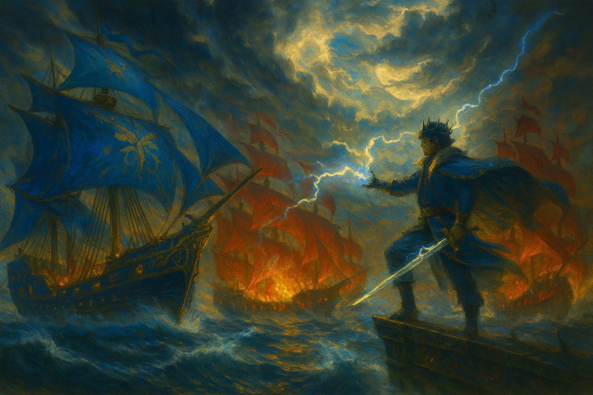
Chapter 1 — Discovery
The sky cracked open with lightning.
Naya stood at the prow of his ship, his cloak snapping in the wind like a blue flag. Below him the sea heaved, and every flash turned the waves silver.
He hadn't planned on a fight tonight. He'd only meant to sail once around the island and make sure the trade routes were clear. Then he saw them: red sails on the horizon. Dozens of them, under no banner he knew.
That wasn't the strangest part. A week ago the Grand Map had vanished, and since then the currents had gone wild. Ships all over the realm were stuck in their harbours. But these red ships sailed straight and steady, as if the sea were moving aside to let them through.
"Battle stations!" he shouted. His crew were moving before the thunder answered.
Cannons boomed. Fire jumped from ship to ship, and the air filled with smoke and salt. Naya raised his sword, and lightning ran down the blade. The storm listened to him. It always had.
He drove straight into the middle of the red fleet. The first ship split apart under his strike. The next one caught fire before it could turn its guns. He was outnumbered ten to one, but numbers don't count for much against a storm.
Minutes later, the sea was full of burning wrecks.
The red ships went down without a cry. No survivors. No flags. Nothing to say who they were. Only silence and drifting ash.
Naya stood at the bow again, watching the empty horizon.
"Who are you?" he said quietly to the waves.
Lightning flickered in his hand once more, smaller now.
The Grand Map gone without a trace. And now a fleet that didn't need it.
Maybe, he thought, the map hadn't vanished by accident at all.
The wind gave no answer. Only thunder, rolling somewhere far away.
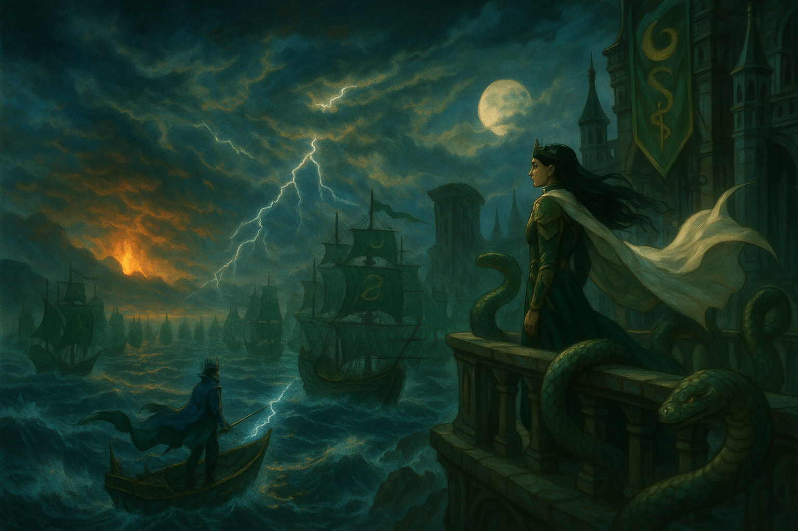
Chapter 2 — The Serpent and the Pirate
The lightning faded, but the uneasy feeling didn't.
Naya could feel it in the air, a hollow pull, like the quiet before a second storm. That hadn't been a random raid. The red fleet had been going somewhere, and it hadn't been looking for him.
It had been sailing toward Talz Dominion.
His jaw tightened. Queen Talitha was nobody's fool, but her navy wasn't built for a sudden war. He turned to his helmsman.
"Bring her around," he said. "We go via the Hangkas."
The sea did as he asked. Wind snapped into the sails, and the thunder rumbled behind them as if it were pushing them along.
They sailed through the night in flashes of lightning and spray. When dawn came, Naya saw something that chilled him more than any storm had: the sky over the Hangkas.
Smoke. Storm clouds. War banners going up.
Neya's fleet was gathering in the harbour, black ships lined up against the morning light. And there she was, on the balcony of her sea palace, her cloak whipping in the wind, her eyes on the horizon.
She had seen the same thing he had. Maybe more.
As his ship came closer she turned, and their eyes met across the water. She didn't need to say anything. She had felt it too. Something was very wrong.
A clap of thunder rolled in from the north.
Then they saw it: a burst of orange fire splitting the horizon.
Opita Island. The explosion lit up the sea like sunrise.
Neya's face went hard. "They've hit Opi," she called down, her voice steady. "I'll go."
Naya nodded. "Then I'll check on Talitha."
"Be careful, pirate."
"You too, Empress."
Neither of them waited. There wasn't time.
The storm split between them, half of it rolling north with Neya's fleet, the other half curling east with Naya's ship. And as they disappeared into the mist, the thunder carried one warning through the clouds:
The Realm of Neya was at war.
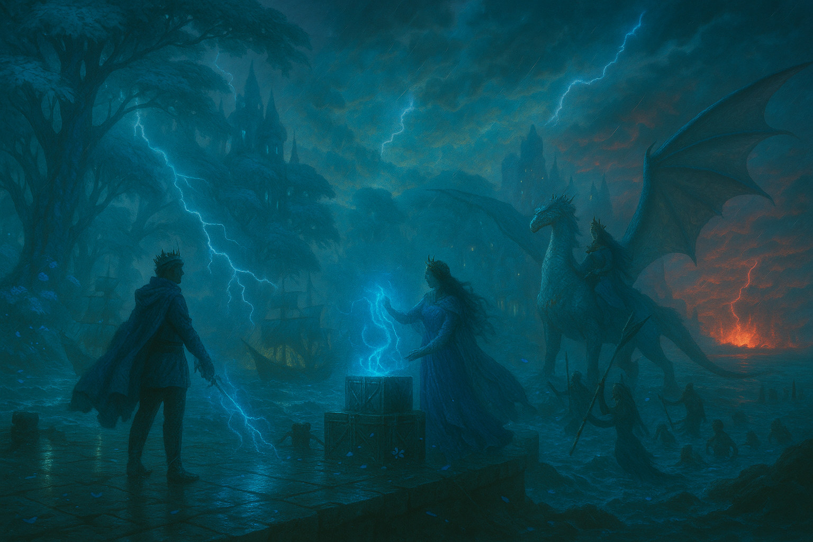
Chapter 3 — Dragons and Mermaids in the Garden
By the time Naya reached Talz Dominion, the horizon was glowing blue.
Petals floated on the water. The trees, tall giants with sapphire leaves, swayed in a rhythm that had nothing to do with the wind, and their roots pulled at the soil as if they were alive. The air smelled of rain and sap.
The Dominion was beautiful. It was also getting ready for war.
Naya jumped from his ship onto the slippery dock, splashing through seawater and petals. Lightning lit up the huge garden towers that reached into the clouds.
"Over here!" called a familiar voice.
Queen Talitha stood under an arch of blue vines, her gown soaked, her hands glowing as she shaped the plants into living barricades. Beside her, Queen Jasmyn sat on her dragon, its wings spread wide, its scales catching the lightning like rippling silver.
"Naya," Jasmyn said. "It's spreading. They've attacked the Moyin Islands and taken Maureen's eastern island. Kaylee's army is trying to push through from the west."
Naya frowned. "That's northeast of here. They're moving inland."
"And we can't reach them by ship," Talitha said. "Not without the Grand Map. The currents are wild, the winds turn around without warning. Nobody can sail anywhere."
Naya glanced at the horizon. "Then the seas are useless for most of us." He looked at Jasmyn. "But not for you."
Her dragon gave a low growl, as if it understood.
"My dragons can still fly through the storms," Jasmyn said, "and my mermaids can swim underneath them. I can reach Moyin. But I'll need supplies. A lot of them."
Talitha turned, and the vines moved at her word. They lifted crates from the docks, full of glowing blue fruit, roots and crystals of living water.
"Take these," she said. "Growth catalysts. They'll feed your dragons and help your wounded heal. Tell Kaylee that Talz stands with her. Tell Maureen she isn't alone."
"Good," Naya said. "While you head northeast, I'll go east to Rahel's Empire. She needs to start making her healing salves before this gets any worse."
Jasmyn's dragon beat its wings, and the gust scattered blue petals across the water. "Once Moyin is safe, I'll fly to Rahel," she said. "My dragons and mermaids can carry her salves across the realm."
Naya looked at the two queens. "This storm's only beginning," he said. "But as long as we're still standing, Neya's realm won't fall."
Lightning flashed, and for a moment the three of them seemed to glow together: blue vines, silver scales and white lightning.
Then the storm roared again, and the war began to move.
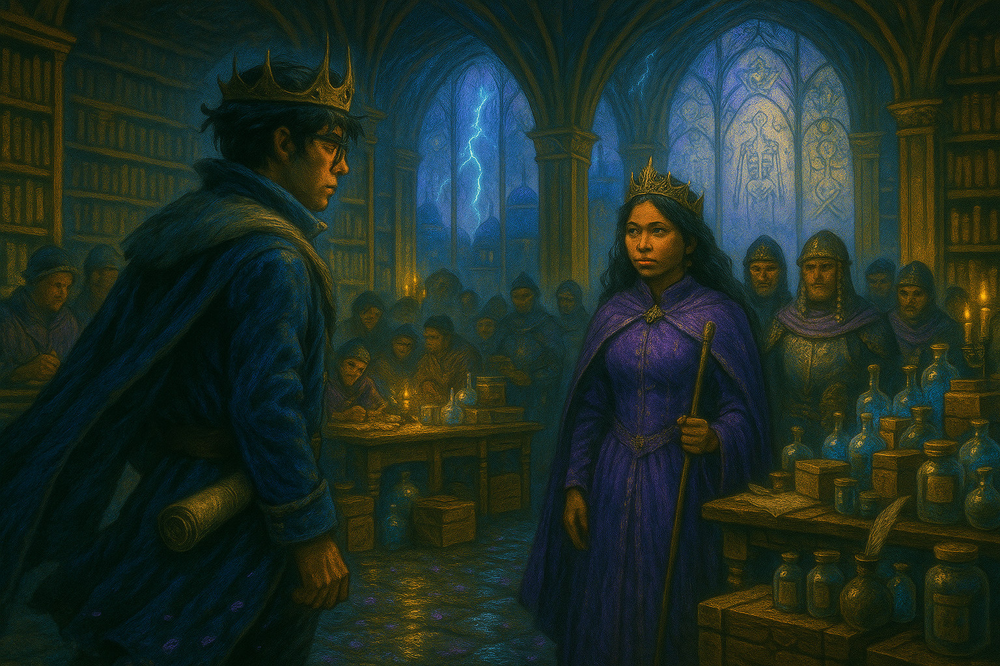
Chapter 4 — The Great Doctor
Rahel's Empire rose from the plains like a violet city: purple domes and spires, banners stitched with a healing hand. Guards in lavender armour watched the roads. Naya's boots rang on the cobbles as he walked into the palace grounds.
The grand library stood at the heart of the city, a domed hall of books with medicine charts painted into its windows. Inside, it smelled of dust and herbs, and it was quiet in the busy way of a place that keeps the world from falling apart.
Rahel waited among her books, surrounded by guards. She stood when he came in and kept a careful distance. Polite, but wary. Naya noticed, and didn't blame her. She was Neya's friend, not his.
"Pirate," she said simply, one hand resting on her short staff. "What do you want?"
Naya told her quickly, because time was all they had. The red fleet. The fires. The missing Grand Map. Jasmyn flying for Moyin, Kaylee's bears holding what ground they could, Talitha sending supplies.
"And I need your healing salves," he said. "This war is going to spread. Your salves can save whole armies. Jasmyn will carry them by dragon and by sea. But you have to make enough for the whole realm, not just your own towns."
Rahel's eyes narrowed a little as she listened. Around them, the librarians had stopped writing. Then she let out a long breath that smelled faintly of lavender.
"Are you asking as a messenger or as a commander?" she said. "If the realm really is burning, I'll organise the healers. But I won't waste my empire's medicine on fools."
Naya met her eyes. "Both. Tell Neya I'm still loyal to our alliance. Tell your healers this is a war. Get your people ready for supply runs." He paused. "And guard the library."
He let that hang. The library was more than books. It was Rahel's arsenal.
Something in her face changed, from suspicion to something closer to resolve. "Very well." She waved over a scribe. "Send word to every apothecary. Double the salves. Make two copies of every recipe. If the Grand Map is gone, there'll be no easy way to move supplies, so we need backups for everything."
Naya turned to leave.
"One more thing," Rahel said. Her guards stiffened.
He stopped.
"Is it true," she asked quietly, "that pirates made the Grand Map? That your crew once 'conquered wind and sea' to make travel safe? Can it be made again?"
It didn't sound like an accusation. It sounded like a scholar who had spent years staring at old charts and wondering.
Naya thought of the old nights with his crew: ink on their fingers, compasses everywhere, all of them laughing at the sea as if it were a puzzle. Not everyone from those nights was still with him. He didn't need to make a speech about it.
He just nodded.
Rahel studied his face, then gave a small smile. "Then you know what you have to do." Her voice was softer now. "But you'll be doing it while the realm burns. Don't pretend it'll be easy."
"I know," Naya said. "I'll do it anyway."
Rahel gave a short nod, and the library came alive behind him: scribes shouting, pens scratching, apprentices running, healers lining up bottles.
Outside, thunder rolled. Naya walked back to the docks with his cloak snapping in the wind. He would chart the realm again, he decided, even if he had to carve the lines into the sea with lightning.
And with that, he set course for Pam's Wonderland, the next piece of the Grand Map he would have to win back.
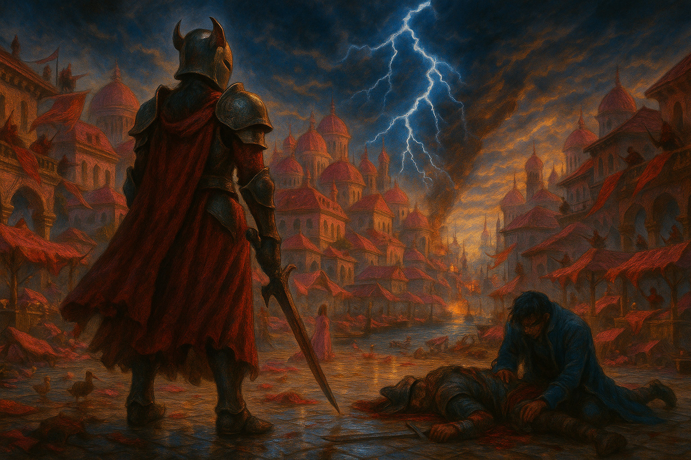
Chapter 5 — The Vacation Islands
The sea spat them out like a secret.
Pam's Wonderland rose from the water, soft and silly and pink: pink roofs, lilies on the canals, rows of pink ducks waddling along the promenade and quacking politely while attendants fed them. To the southwest, music drifted over from Bina's Sunny Island, and barbecue smoke floated lazily over the palm trees. For a moment, Naya let himself enjoy it. This was supposed to be the place that forgot about war.
Then he saw the faces.
The plaza should have been full of laughter. Instead, people walked with their jaws clenched and their eyes down. Parents held their children close. It wasn't fear of him, and it wasn't quite fear of soldiers, either. It was the kind of fear that listens for orders and obeys without thinking.
And the ducks. Pam's messenger ducks usually filled the sky over the palace, coming and going with letters from every corner of the realm. Today they were all shut in their pens, silent.
Pam met him in the palace garden. For a second she smiled. Then the smile broke.
"How did you get here?" she whispered, as if even the question was dangerous. "Without the Grand Map, how…"
"I can read the storms," Naya said, keeping his voice calm. "I've sailed without charts my whole life." He looked past her at the crowd. "Pam, are you safe?"
Her lip trembled. A tear ran down her cheek. She looked like she wanted to run, or to beg him to leave. Her eyes flicked up to the rooftops and back, very fast. Then she wiped the tear away and only managed a whisper.
"We're… not alright."
An arrow hissed through the air where his head had been a moment before. Naya ducked so fast his shoulder hit a carved bench, and he felt the arrow brush past his ear.
Shadows dropped from the rooftops. Figures in red landed like falling leaves and closed off the square. They moved like knives. Silent. Deadly.
"Stay back!" Naya shouted. His crew rushed forward, hands on their swords. But the plaza was full of traps, and every one of them seemed to answer a single command.
A woman walked down from the highest balcony. Her armour was dark red, trimmed with silver, and her helmet was tucked under one arm. Naya knew that face. General Nonne. Once she had stood at Empress Neya's right hand. Once she had saluted the Hangkas banner. Naya felt his old respect for her twist into something hot and hard.
"Nonne?" he said. The name tasted like ash.
She gave a small, sharp laugh. "You remember me. Good. I don't owe you any explanations, Pirate King." She tilted her head, enjoying herself. "You'll be dead soon anyway."
Pam made a sound like she wanted to cry out. For a second Naya thought she might move. Then she froze. Tears ran down her face, but she didn't speak and she didn't step forward. Her eyes went to the rooftops again, and this time Naya followed them. The crossbows up there weren't only aimed at him and his crew. They were aimed at the crowd. At her people.
Nonne raised a hand. Across the rooftops, hidden blades slid free. Dozens of crossbows swung toward the harbour, the docks, the alleys where Naya's crew stood.
"Take the queen," Nonne said. "As for your crew, Pirate King, you can watch them fall." She smiled slowly. "My assassins are already in position. Let's see how fast loyalty burns."
Naya felt fire rise in his chest. Around him his crew tensed. The captain of his guard caught his eye and gave a single nod, the kind that means all hands on deck.
"Well?" Nonne said. "Choose."
The plaza filled with running feet and the soft, terrible click of hidden traps snapping open. Down at the harbour, a cannon boomed.
Naya lunged for Pam. Two assassins slid in behind him, and a dagger bit into his shoulder, hot and quick. He tasted salt and lightning, spun, and cut the attacker down.
But the plaza was closing around him like a fist. Nonne's soldiers locked their shields together. He saw her raise her hand again, heard the far-off whistle of a crossbow bolt, and behind him one of his best men fell without a sound.
For a heartbeat, Naya thought of Neya. Of green banners. Of the serpent ship he had carved with his own hands. He thought of the map, the ink and compasses, and all the work still left to do.
Then Nonne's voice cut through the chaos, cold and certain.
"Kill them."
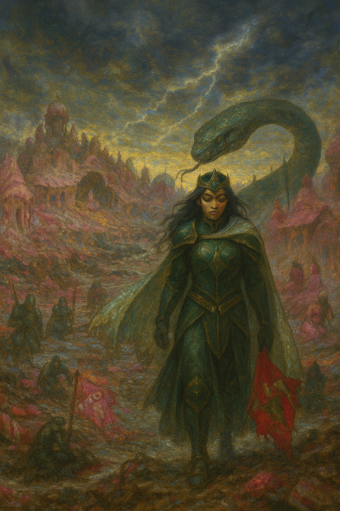
Chapter 6 — The Roasted Marshmallows
The sea between the Hangkas and Opita Island was small, barely a morning's sail. It was already burning.
Smoke rolled across the horizon like a dark curtain. The closer they came, the more the air tasted of sugar and ash. Sweetness, spoiled by fire. From the prow of her ship, Empress Neya watched the shoreline flash red and pink.
Cannon fire.
And candy fire.
Her jaw tightened. "They've already taken it."
Her flagship, the great Serpent Moon, carved in the shape of a coiled sea snake, cut through the waves. Dozens of smaller ships followed, green and butter banners snapping in the wind, while her serpents swam around them in long, smooth curves. The whole fleet moved like one living creature.
Then the first barrage hit.
Molten sugar and burning cake smashed into the water. The red army had built cannons out of Opi's own creations and turned the island's sweetness into weapons. A jelly mortar burst near the bow and threw caramel fire into the sky.
"Return fire," Neya said quietly.
Her order rippled down the line. The serpents rose out of the waves, huge and scaled, and struck the shore. They tore through the enemy cannons like wet paper, and the coastline cracked open under them.
In minutes, the coast was hers again.
"Land the troops," she said. "Clear the port."
They marched through sticky ruins, frosting melting under their boots, smoke rising from broken candy towers. Opita Island, once the sweetest place in the realm, looked like a dream that had been half eaten and left to rot. Hangkas soldiers moved in pairs, cutting down what was left of the red army's front line. Melted sugar glass crunched underfoot.
Neya walked behind them, steady. Her serpents slid along beside her, their great heads weaving through the ruins.
The further they went, the quieter it got.
And then she saw it. The hole.
It wasn't just a crater. It was a wound. The whole capital of Opita, Opi's palace, the tall cake castle that used to sparkle like the centrepiece of a festival, was gone. Nothing was left but scorched sugar and blackened icing. The smell of burnt sweetness hung in the air.
For the first time in a long time, Neya's calm slipped.
"Opi…" she whispered.
Her serpent curled protectively around her as she stepped closer. There were pieces of the palace everywhere: frosting walls, candy glass windows, crushed like sugar sculptures.
She turned to her captain. "Search the ruins. Find survivors. Anyone."
Her soldiers scattered. The serpents hissed low, tasting the ash. Neya looked out at the horizon again.
Why Opita?
Opi's island was no threat to anyone. It was a food kingdom, gentle and generous. And yet they had come with everything they had.
Something glinted, half buried in melted candy glass. She knelt, brushed the sugar away, and found a piece of red armour painted with a strange symbol. One she had never seen before.
Her pulse stopped for a beat.
She stood up slowly. "Bring me that standard," she said. "I want it confirmed."
Lightning flickered behind her. Her serpents hissed. Then, faintly, much too faintly, she heard something under the rubble.
A cough.
"Opi?" she breathed.
And without a second's thought, the Empress of the Hangkas dove into the ruins.
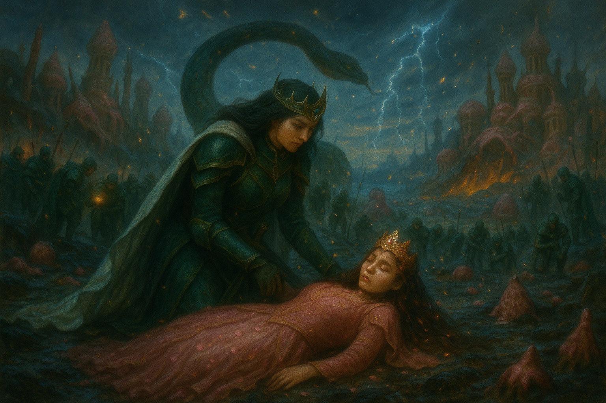
A sweep of her serpent's tail cleared the last of the rubble, and there, half buried under melted frosting and broken sugar glass, lay Queen Opi. Her pastel gown was torn and burnt, and the sweet smell that always followed her was fading into smoke.
"Opi!"
Neya dropped to her knees and brushed away the sticky shards. Opi's breathing was faint and shallow. Her skin shimmered weakly, like sugar melting in the rain.
"Get a medic!" Neya shouted. "Now! Bring the field healers!"
Soldiers ran over with supplies, but Neya already knew. This was beyond them. Opi would live, but slowly. Only Rahel's healing salve could bring her back quickly.
Then Opi's eyelids flickered.
"Empress Neya…" Her voice was fragile, but still soft and warm. "You came."
"I'm here," Neya said, kneeling closer. Her voice was steady. Her hands weren't. "Don't talk. You need to rest."
Opi tried to smile. "I'm sorry… I couldn't stop them."
"You did what you could. You survived. That's enough."
But Opi shook her head, and a tear cut a line through the sugar dust on her cheek. "You don't understand. They're not just invaders. They're after the whole realm."
Neya's eyes narrowed. "Tell me."
Opi coughed. "They came for our food. The red army is going after every kingdom that grows or makes something. They'll take us over, strip us bare, and let the rest of the realm starve without us. They want to drain everyone until only they're left."
Neya went very still. "That's… organised."
"It's worse," Opi whispered. "It's too perfect. They knew where to strike. They knew how to make the Grand Map disappear, and how to sail without it. They move through the storms like they belong here. No outsider could do that."
Neya felt her heart go cold. "Then they're not outsiders."
Opi nodded weakly. "Their general… she's waiting for you. In the capital, or what's left of it. She's the one who destroyed it. We fought. That's what caused the explosion."
"She's still here?"
"Yes. She said she wanted you. She said…" Opi's voice broke into a small cry of pain.
Neya rested a hand on her shoulder. "Shh. You've done enough."
She stood up slowly. Her cloak was stained with candy dust and blood, and her eyes burned a fierce green. Outside, the storm roared again, as if it were answering her heartbeat.
"Guard Queen Opi," she told her soldiers. "Keep her alive. Anyone who touches her answers to me."
The soldiers saluted. Her serpents coiled tighter around the ruins, eyes glowing in the stormlight. Neya turned toward the heart of what used to be Opi's candy kingdom, now a ruin of black sugar and flame.
Lightning cracked across the sky.
"She wants me?" Neya said under her breath. "Then she can have me."
The closer she came to the capital, the wilder the ruins got. Red soldiers were picking through the melted towers like scavengers, smashing open sugar vaults and stuffing sweets into battered chests. Every theft felt like a slap.
They tried to stop her with volleys of blades and charging lines, but none of them could touch the Empress. Her guards moved as one with the serpents: coils that blocked, heads that struck, fangs that flashed. One brave soldier got his sword caught between two serpent jaws and was flung, dazed and coughing, into a heap of frosting. The Hangkas pushed forward like the tide. Steady. Unstoppable.
Then she saw her.
In the middle of the ruined plaza stood a woman in red armour so tight it looked like a second skin. Slim, cold, precise. General Kannca. Red serpents rose around her like a living crown. Once, she had been one of Jasmyn's guards. Now she stood with the invaders.
"So you've decided to bring even more shame to your name," Neya said flatly.
Kannca's lip curled. "What shame? This realm is going to fall. I'll have your kingdom and your serpents." Her red serpents hissed behind her. "You'll kneel."
She snapped her arm forward, and her serpents struck like crimson whips. Neya's serpents met them head on, green and butter scales flashing, fangs bared. The plaza became a blur of bodies and scales.
For one long, terrible minute, it felt even. Heads crashed together. Venom sprayed like mist. A red serpent lunged for Neya's throat. She twisted away and its fang nicked her cheek. It hurt, but she didn't stop.
A green guard grabbed a red serpent's tail and slammed it into the ground. One of Kannca's serpents wrapped around a fallen statue and crushed it into an avalanche of sugar that buried half a squad. Neya and Kannca circled each other like two storms. Every time a green head rose, a red one answered. Every time Neya struck, Kannca blocked.
"Just as I thought," Neya said through her teeth, after a clash that sent two red serpents skidding across the plaza. "Your serpents are nothing."
Kannca laughed. "You bluff like a child. It's even so far. Stop talking. My serpents will crush yours, and soon I'll be queen of all of them."
Neya's eyes flared a bright, fresh green. "Like I said," she answered, low and dangerous, "there's a reason I'm the Queen of Serpents."
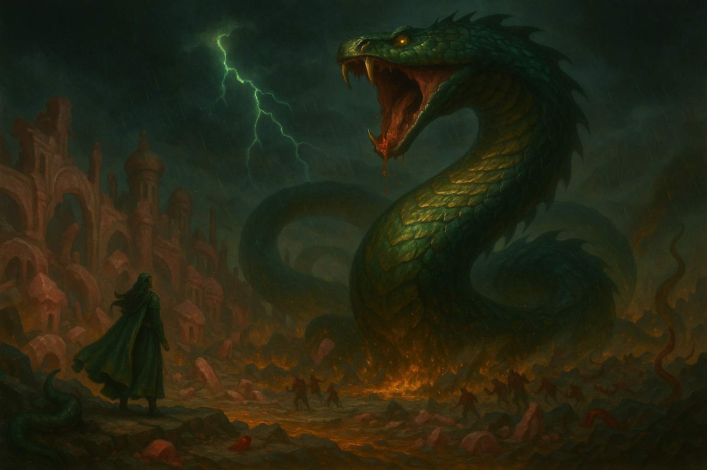
The ground answered.
First a tremor, a small shiver under feet and scales. Then the whole plaza buckled, as if the island had taken a breath. Cracks raced out from under Kannca's boots. Her red serpents reared back as the earth split.
Kannca's smile faltered. She looked down. "What—"
The ground exploded. Stone and sugar flew into the air, and out of the crack rose something huge and terrible: scales darker than the deepest forest pool, eyes like cut emeralds, a head the size of a carriage. A basilisk, older than any story, uncoiling from deep inside the island itself.
It rose at Neya's call. Its mouth opened wide, and then it lunged, fast as lightning, at Kannca.
Kannca shouted at her serpents to stop it. They struck and missed. The basilisk was already over her. She reached for her blade, for a trick, for anything.
Too late.
The basilisk swallowed her whole.
All that came back out was a single red gauntlet, which clattered onto the cracked sugar stone.
For a breath, the red soldiers just stood there in shock. Then they panicked. Without their general, their lines fell apart. They ran, tripping over melted candy, dropping their loot, racing for boats that wouldn't take them far. Kannca's red serpents went limp and slithered away like frightened grass snakes.
Neya stood over the trembling crater, her serpents coiled around her, breathing steam into the cold air. She didn't feel triumphant. Only clear.
"Do you still doubt it?" she asked the silent ruins.
Around her, her serpents roared, and the last of the red soldiers fled into the smoke, leaving Opita to its survivors and the first small steps toward getting better.
The fight had looked even. It never had been. It had been a lesson, and Neya had made sure nobody would forget it.
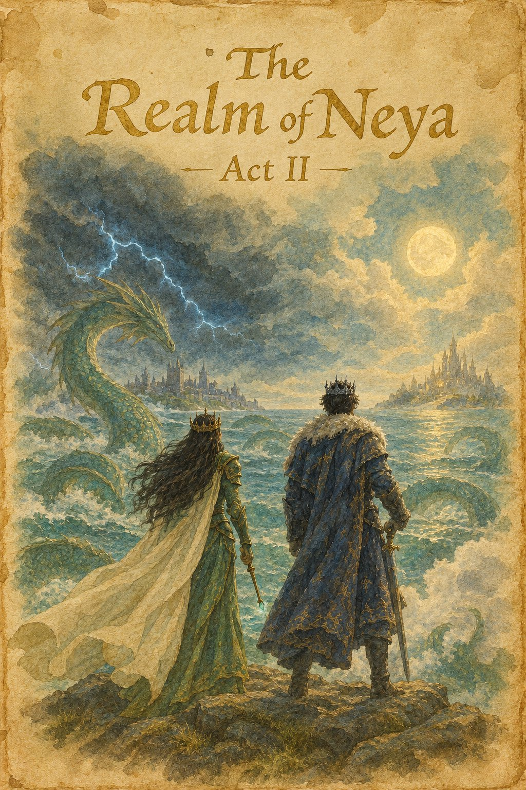
Act 2
Chapter 7 — Sugar and Ash
The storm over Opita Island finally broke on the third morning.
The candy towers were half melted. Some had cracked down the middle, and some were simply gone. But the people of Opita were already rebuilding. Sugar hammers rang across the harbour, and caramel cranes swung chocolate beams into place. The whole island smelled of frosting and smoke.
Neya watched from a balcony above the port. Her serpents lay coiled in the shallows below, keeping an eye on the workers. Now and then a child waved at one, and the serpent blinked back, very slowly.
Her captains came up to report. The last red ships were burning in the bay. Kannca's army was gone.
"Good," Neya said. "Then let's not waste the morning."
She found Opi in the infirmary, propped up under a blanket of spun sugar lace. She still looked tired, but some colour had come back to her cheeks.
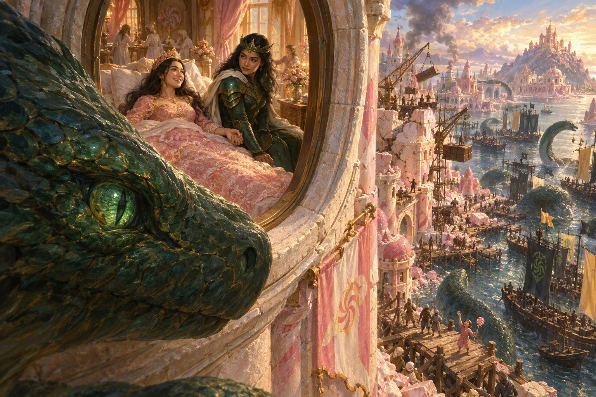
"You're leaving," Opi said.
"I haven't said anything yet."
"You don't have to. You've got your going-away face on."
Neya sat on the edge of the bed. The floor was sticky under her boots. Half sugar, half ash.
"Your people know what they're doing," she said. "They don't need me standing on a balcony looking serious."
Opi laughed, then winced. "You do look very serious."
"I'm worried," Neya admitted. "We haven't heard from anyone in days. Not a letter. Not even one of Pam's ducks."
Opi's smile faded. Pam's ducks went everywhere. They carried birthday wishes and recipes and gossip, and they had never once stopped coming.
"Where will you go?"
"Ayaluna first. It's the closest, and Aya hasn't sent word." Neya stood. "If she's in trouble, I want to know. If she isn't, she can help me find out who is."
Opi caught her hand before she could go. "Be careful. Kannca was waiting for you. What if the rest of them are too?"
"Then they'll be sorry they waited." Neya squeezed her hand. "Rest. Eat something sweet. That's an order from your Empress."
"You never give orders."
"Then it's a favour from your friend."
By noon the black ships of the Hangkas were sliding out of the harbour, the great serpents swimming ahead to pull them through the wild currents. Along the shore, the people of Opita put down their hammers and waved until the fleet was gone.
Neya didn't look back. She was already looking east, toward Ayaluna, and toward the dark clouds gathering over the centre of the realm.
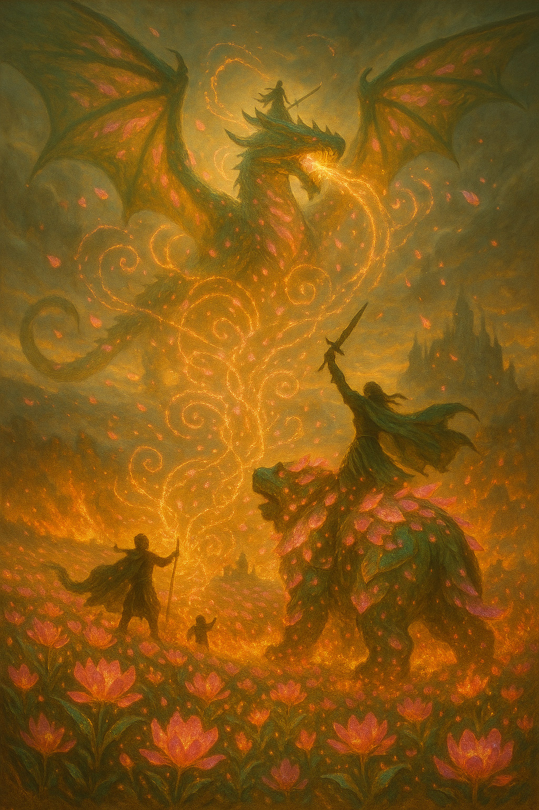
Chapter 8 — Tulips and Roses
On Western Moyin, fields of pink and gold tulips ran all the way up the hill to Maureen's palace. People used to say their scent helped artists dream. Now they burned in rows, the petals turning to embers under cannon fire.
Kaylee roared from the back of her armoured bear, a huge beast plated in greenstone, its fur wet with rain. Around her the soldiers of Kayleeville charged, and the ground shook under their feet.
Above them Jasmyn dove through the smoke on her dragon. Along the coast her mermaids sang back to her and hurled spears of crystallised salt into the red army.
The two queens met in the middle of the field, out of breath, their faces streaked with ash and pollen.
"Still standing?" Jasmyn called.
"Still swinging," Kaylee said. "But they hit harder than they should. Look at them."
The red soldiers' armour glittered with tulip petals and, worse, with streaks of rose red. Their skin had a faint glow. Two kinds of magic at once: Maureen's tulip craft, and the rosecraft of KZ Roselynd.
Jasmyn's eyes narrowed. "Tulips and roses. They've already been north."
"Which means KZ has fallen," Kaylee said quietly.
"Queen Kaylee. Queen Jasmyn."
They turned. One of Moyin's royal enchanters was limping toward them, leaning on a wand carved from a tulip stem.
"Her Majesty left something for you," he said. "She said if you ever came, I should give you this."
He raised the wand. The ground trembled, and tulips burst up out of the burnt soil, fast and glowing, spiralling across the field in pink light. The petals wrapped around claws and fur and scales and hardened into bright pink armour that shone like glass.
"It won't last," the enchanter said. "A few minutes. But for those minutes, nothing can stop you."
Kaylee grinned and climbed higher on her bear's shoulders. "A few minutes is plenty."
Jasmyn drew her sword. "Then let's go and get her back."
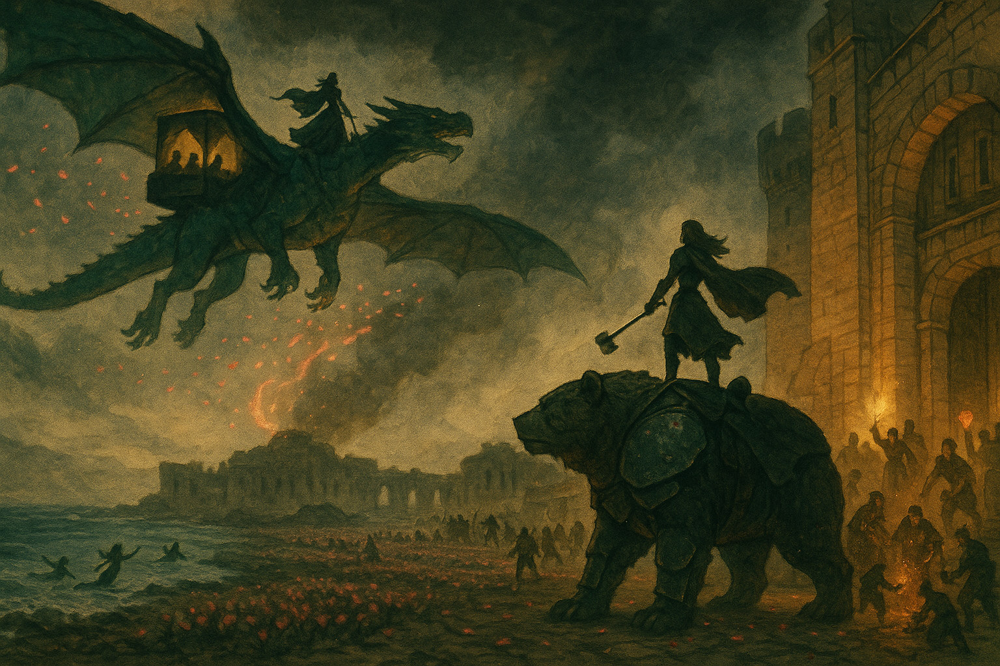
They hit the palace together. Kaylee's bears came from the south and tore down the gates. Jasmyn's dragons dove from the north while the mermaids ripped open the sea walls. The tulip armour made all the difference. Where the red army's enchanted plates had shrugged off steel before, dragonfire now cracked them, and bear claws split them like dry bark. The red lines bent, and then they broke.
Kaylee pushed past the last of the rubble into the throne room.
The throne was empty.
She checked the side rooms, the servants' halls, the hidden space under the dais. Nobody. No queen. And there had been far fewer soldiers than there should have been, as if most of them had left before the fight even started.
Jasmyn's dragon landed on the balcony, and she slid down. "Did you find her?"
"No." Kaylee clenched her fists. "Most of them were already gone."
A young soldier ran in, white in the face. "My queen! There's someone in the old prison. Calling for help."
They ran.
In the darkest cell, a handful of tulip enchanters lay on the floor, grey-skinned and hollow-eyed, broken wands in their hands. When the medics pressed salve into their palms, one of them found just enough strength to speak.
"They took her. Maureen. And the other enchanters. Sailed east, to Eastern Moyin. KZ too, and her rose knights." His head drooped. "They made us enchant their soldiers. Rock and rose and tulip, so nothing can touch them. They're draining us dry."
Kaylee's anger hit her so fast her vision blurred. She threw off her cloak.
"To the ships!" she roared, already halfway down the steps. "We go east. Now. We take her back."
Jasmyn caught her arm. "Kaylee."
"Then fly me there. We'll chase them down on your dragons."
"No." Jasmyn didn't let go. "Listen. You can't sail there without the Grand Map. And the tulip armour is already fading. Without it, our claws and fire won't get through their armour. You saw how empty this place was. Most of their army has already gone east. We'd be flying straight into a trap."
"So we do nothing?" Kaylee's voice dropped low. "They took Maureen. They took KZ."
"We do what saves the most people. Rahel's salves need to reach every kingdom, and right now I'm the only one who can carry them. I'll take these enchanters to Rahel. As soon as the healers are moving, I'll come back. Then we go east together."
Kaylee looked at the broken enchanters, at the empty throne, at the red lights blinking far across the water. The fight drained out of her slowly, like heat from a stone.
"Fine," she said at last. "Go. I'll hold Moyin. I'll get every smith and every tulip grower we've got and rebuild these walls. And when you come back…"
"I'll bring fire," Jasmyn said. "I promise."
Jasmyn gathered what she could: a stretcher for the enchanters, a few mermaid nurses, a crate of salve from the palace stores. She strapped it all to her dragon.
"Keep Maureen's throne warm," she said.
"Nobody's taking these islands while I'm here."
The dragon lifted into the smoky sky, wings beating hard south toward Rahel's Empire. Kaylee turned back to her bear and the slow, heavy work of getting ready for war.
Over the blackened fields, the last tulip petals drifted down like small, sad stars.
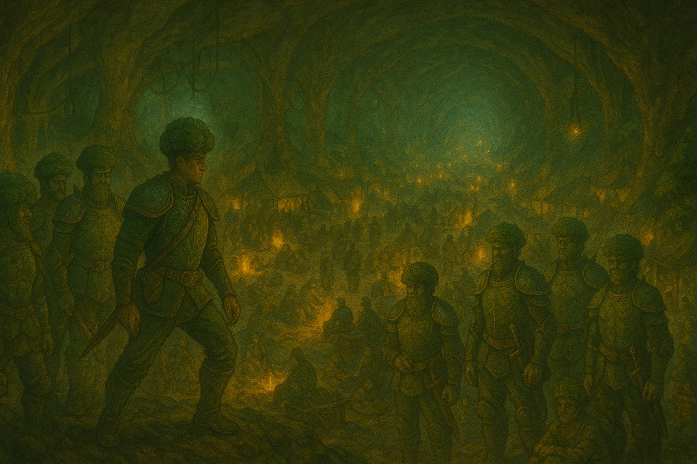
Chapter 9 — The Holy Broccoli
The fields of the Broccolingdom smelled of steam and spilled grain.
The neat green rows were ruined, torn up by the tracks of the red army. The animal pens were empty. Wagons lay on their sides in the mud. Red soldiers moved across the plain like locusts, hauling sacks of seed into their carts.
Between the stalks, a single broccoli head rose up. It wasn't a plant. It was a soldier's helmet, shaped like a tight green floret. Underneath it, one of King Zav's scouts lay flat on his belly, breathing slowly, watching.
The kingdom had surrendered to save its farms from burning, and the red army had taken everything anyway. Most of Zav's people had been captured or scattered. Enemy banners hung over the capital.
The scout crawled up the slope. At the top of the ridge he stopped. Far off over the eastern hills hung a cluster of pink clouds. Thin, soft and glowing. If he hadn't been looking for it, he would have thought it was just the sunset.
He was looking for it.
He jumped up and ran.
The cave in the mountains smelled of soup and old bandages. Lanterns burned low. Women hummed as they wrapped the wounded, and children slept in piles of blankets. In the middle of it all moved King Zav, never still, never slow: patching a torn sleeve, tasting a ladle of broth, fixing a splint with the same quick fingers that once grew the finest broccoli in the realm.
The scout stumbled in. "My king! Pink clouds over the east ridge. It's Laura. She's here."
For a moment, relief crossed Zav's face. "Laura's lanterns," he said softly. "Of course she came looking."
Everyone in the cave had gone quiet.
"Then tonight," Zav said, "we take the capital. Only for a little while. We break in, climb the holy broccoli, and Laura's lanterns lift our people off the top. We don't need to hold the city. We just need a way out."
One of his generals stepped forward. "My king, the women, the children, the wounded. How? The walls are crawling with guards. If we charge, they'll cut us to pieces."
"I know you're worried, my broccoli people," Zav said. "I'm worried too." He looked over at the children. "So listen. At midnight I'll clear a path from the mountain to the walls. You bring the wagons and the wounded behind me, and you protect the ones who can't fight. We make a supply line, and we keep it open. We don't just run in like fools."
"Let us go with you, my king."
"No." Zav smiled. "I'm still the fastest broccoliman this realm has ever seen. I go first. You hold the line behind me." He tapped the old horn on his belt, carved with harvest patterns. "I clear the throat. You hold the body."
The generals looked at each other, worried and proud at the same time. Then they bowed and went to get ready.
Midnight.
The villages around the capital were empty and dark, their houses looted bare. The capital walls were another story. They were packed with guards, and inside, the red army was busy counting and loading everything it had stolen, ready to send it to the front.
Then Zav struck.
There was a flicker of green lightning, and the guards outside the walls were down before they knew anything had happened. Not one of them saw him. Not one of them felt it.
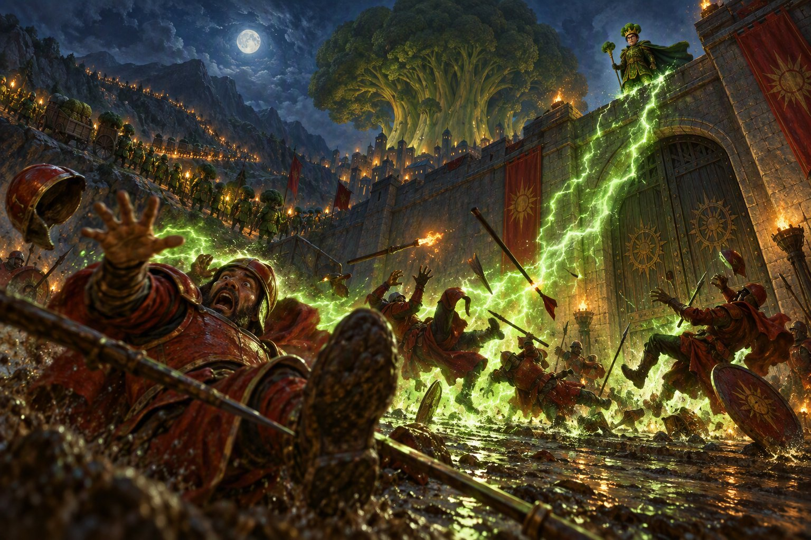
Behind him the broccoli army poured down the mountain, building their supply line as they went. Some stayed back to guard the rear while the rest charged the western gate. By the time the red army sounded the alarm, Zav was already standing on top of the gate.
Too late.
Under the western gate grew an old broccoli tree, and behind it was a door that only the royal family knew about. Zav pulled it open. Behind it, a narrow stair spiralled up through the inside of the walls and into the stem of the holy broccoli itself, the tallest point in the whole kingdom.
"Go!" he shouted. "Up, up, all the way to the top!"
His people streamed through the door while Zav and his generals held off the red army. Zav was everywhere at once, a green blur. He knocked swords out of hands, tripped soldiers over each other, and was back at the door before anyone could follow.
At the top of the holy broccoli, the night sky was full of pink light.
Laura's lanterns drifted down out of the clouds: dozens of them, glowing like soft pink moons, with baskets hanging underneath. Laura's people leaned over the sides, reaching out their hands. One by one, families climbed in, and one by one the lanterns rose away into the dark.
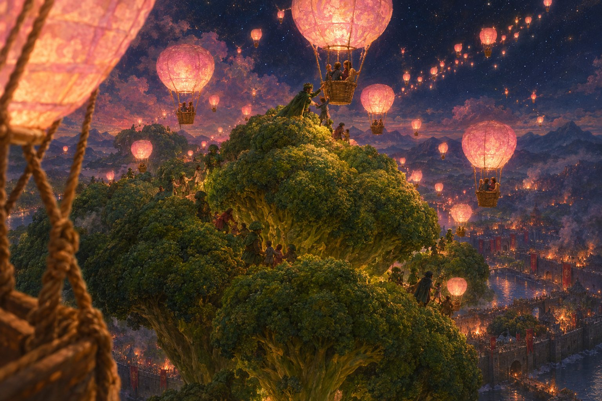
When most of his people were safe, Zav came up last, breathing hard and grinning. He climbed into the final lantern and looked around.
"Where's Laura?" he asked.
The lantern pilot coughed. "Her Majesty, er… was too shy to come."
Zav blinked. "Too shy?"
"And she needs to stay home," the pilot added quickly, "in case anything bad happens."
Zav looked back at his captured capital, then up at the soft pink lights carrying his people away. He laughed for the first time in days.
"Then I'll have to thank her in person."
Chapter 10 — The Storm Wakes
"Kill them."
The crossbows on the rooftops clicked. Nonne's soldiers closed in with their shields locked. Naya's shoulder was soaked with blood, and his best man lay still behind him.
Nonne walked toward him herself, slow and sure, and drew her sword.
"I always wondered what Neya saw in you," she said. "Let's see if she cries."
Naya's heart beat once. Then again. Louder.
It wasn't a heartbeat any more. It was thunder.
Something inside him broke open. The air around him went white and soft and huge. Clouds rolled out from nowhere, from everywhere, gathering at his back and around his arms like a great cloak. His hair lifted. Lightning crackled across his skin, and he felt lighter than he had ever felt in his life.
And he laughed.
Nonne's sword came down.
It hit nothing. Naya was already behind her. He struck once, a flash of white that lit the whole square, and Nonne flew across the plaza and slammed into the fountain.
The crossbows fired. The clouds simply swallowed the bolts. Then the clouds kept going. They poured over the rooftops and wrapped around every assassin up there like big, soft fists. They rolled through the alleys and scooped up soldiers by the dozen. Shields, swords and crossbows dropped onto the cobbles as red soldiers kicked helplessly, stuck inside the clouds and floating a few feet off the ground.
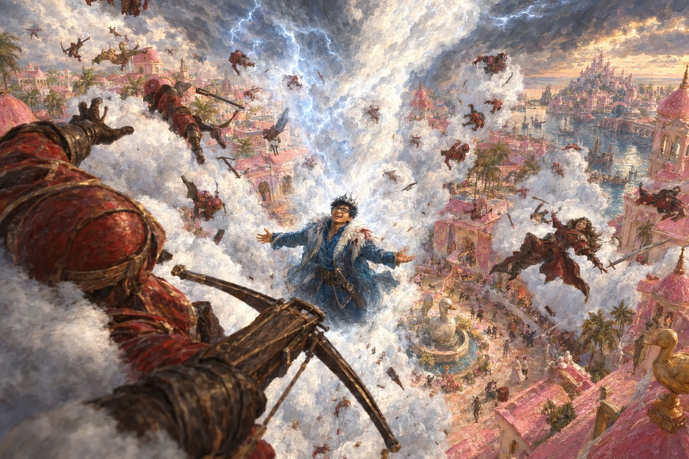
It took less than a minute.
When it was over, the whole red army in the square hung in the air, wrapped up like presents. Pam's people stood frozen, staring. Then someone started cheering, and then everyone was.
The clouds around Naya slowly faded, and he sat down hard on the edge of the fountain, next to the groaning Nonne.
"Well," he said, out of breath. "That's new."
Pam threw her arms around him so hard he winced.
"Sorry, sorry, your shoulder." She was crying and laughing at the same time. "Naya, I wasn't… I need you to know I wasn't on their side."
"I know," Naya said. "I saw where the crossbows were pointing."
Pam wiped her face. "They came weeks ago. Nonne said that if I sent a single duck, or told a single visitor, or did anything at all except smile and act normal, her soldiers would start shooting my people. So I smiled. Every day, I smiled." Her voice cracked. "I'm so tired of smiling."
"You kept them alive," Naya said. "That's what matters."
"What about Bina?" he asked, looking south toward the music that had gone quiet. "Is she alright?"
Pam shook her head. "I don't know. Nonne's soldiers came from the south, so they must have gone past her island first. I haven't heard a thing."
Chapter 11 — Duck Soup and a Lost Map
They tied Nonne to a chair in Pam's palace kitchen, because it was the only room with a lock big enough.
She didn't struggle. She just watched Naya with that same small, sharp smile.
"Why?" Naya asked. "You stood next to Neya for years. Why this?"
"You wouldn't understand."
"Try me."
Nonne looked at the window for a long moment. "This realm is going to change, Pirate King. Something old is coming back. Something your Empress buried a long time ago. When it wakes up, it'll take this whole realm, and everyone who stood in the way will be gone."
"Something old?"
"A demon." She said it the way you'd say the weather. "We're going to bring her back. And then the realm of Neya won't be Neya's any more."
Naya's face didn't move, but his hands went cold.
"Then tell me about the Grand Map," he said. "How did you break it? And how are your ships sailing without it?"
For the first time, Nonne's smile slipped. "That," she said, "isn't mine to tell."
A red mark glowed on the inside of her armour. It burned brighter and brighter, and Naya understood a second too late.
"Everyone down!"
He threw up a wall of cloud just as Nonne exploded. The blast shook the whole palace and blew out every window in the kitchen. When the smoke cleared, the chair was gone, and so was she.
Pam stared at the scorch mark on the floor. "She'd rather do that," she whispered, "than tell you one thing?"
"Whoever she was protecting," Naya said slowly, "she was more afraid of them than of me."
That evening Pam cooked.
She said it was the only thing she knew how to do when everything was falling apart. She made roast duck with her secret chilli sauce, duck noodle soup, crispy duck pancakes and a sticky duck rice that smelled so good Naya's whole crew drifted into the kitchen without being called.
It wasn't ordinary food. Every bite filled them with warmth, all the way down to their toes. Naya's shoulder stopped throbbing. His crew's cuts closed over. The tiredness of the last few days melted away.
"Pam," Naya said, on his third bowl. "This is the best thing I've ever eaten."
"I know," Pam said, and for the first time in weeks her smile was a real one.
After dinner, she opened the duck pens.
Hundreds of messenger ducks burst out into the evening sky, quacking happily, with letters tied to their legs. They flew to every corner of the realm: to Rahel, to Talitha, to Kaylee, to the eastern queens. They carried the news of what had happened here, and the warning Nonne had let slip. Pam's ducks were flying again, and the realm could talk again.
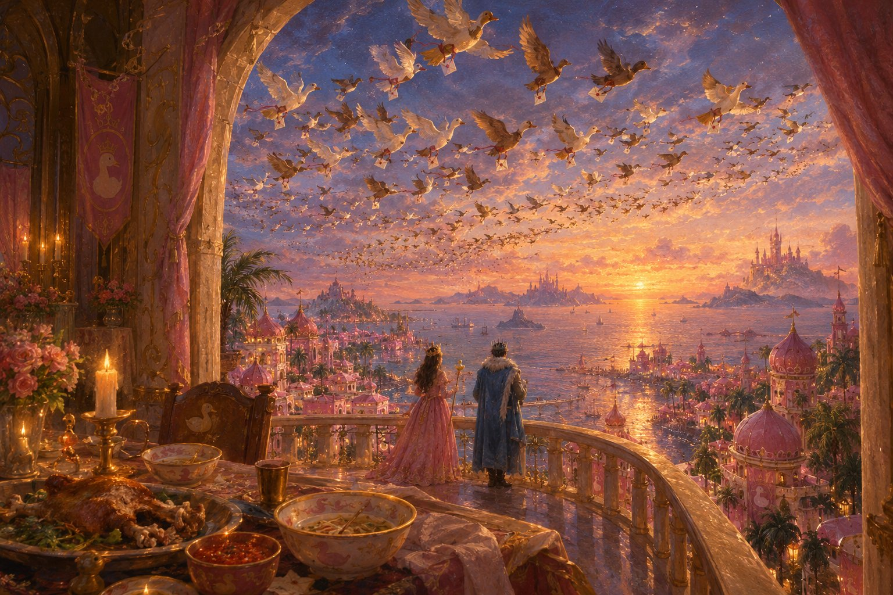
"That's why they held me," Pam said quietly as she watched them go. "Not for my food. For my ducks. If nobody can send a message, nobody knows what's happening anywhere else. Everyone thinks they're alone."
Naya nodded. "Take the food. Cut the messages. Wipe the map." He counted it out on his fingers. "Then the whole realm falls apart on its own."
The first duck to come back was from Bina.
Pam unrolled the letter and read it out loud. "'Hi Pam! A big red army landed on my beach last week. They were very tired. Most of them decided to go on holiday instead of fighting, which honestly, fair. I took care of the rest. A few got past me and went your way, sorry about that! Hope you're okay. I'm on the beach. Love, Bina.'"
Naya put his face in his hands and laughed until his shoulder hurt again.
Later, when the palace was quiet, Pam found him on the balcony, looking at the sea.
"Naya. How does the Grand Map actually work? Everyone talks about it, but nobody ever explains it."
He held up his hand. On one finger was a plain silver ring, worn smooth.
"This is the Grand Map," he said. "The Ring of the Sea. Long ago, my crew and I sailed to every kingdom and charted them, every current, every wind, every safe road through the water. All of it went into this ring. As long as the ring remembers, the sea stays calm and everyone can sail."
"And now it doesn't remember."
"Just before the war started, its memory was wiped. All of it, in one night." He turned the ring on his finger. "That kind of thing doesn't happen by itself. Somebody used forbidden magic on it. Old, dark magic. The same kind of magic you'd need to wake up a demon."
Pam shivered. "Can you fix it?"
"I can chart the realm again, kingdom by kingdom. It's going to take time." He looked down at the ring. "And maybe this ring isn't strong enough any more. If someone could break it once, they could break it again. The realm might need a new one. A stronger one."
Out on the dark water, the last of Pam's ducks disappeared into the night, carrying the news everywhere at once.
Chapter 12 — The Elephant City
Ayaluna was walking.
Neya had seen it many times, but it still took her breath away. The whole kingdom was built on the back of a colossal elephant, so big that clouds caught on its shoulders. Houses and towers covered its back like a forest. Bridges hung from its ears. Every step it took shook the sea.
Aya's soldiers met Neya on the shore with a smaller elephant, which was still enormous, and a rope ladder. They climbed for what felt like an hour, up the great elephant's leg, along its side and into the city on its back.
Queen Aya was waiting at the very top, her navy robes blowing in the wind. When she saw Neya, she ran the last few steps and hugged her.
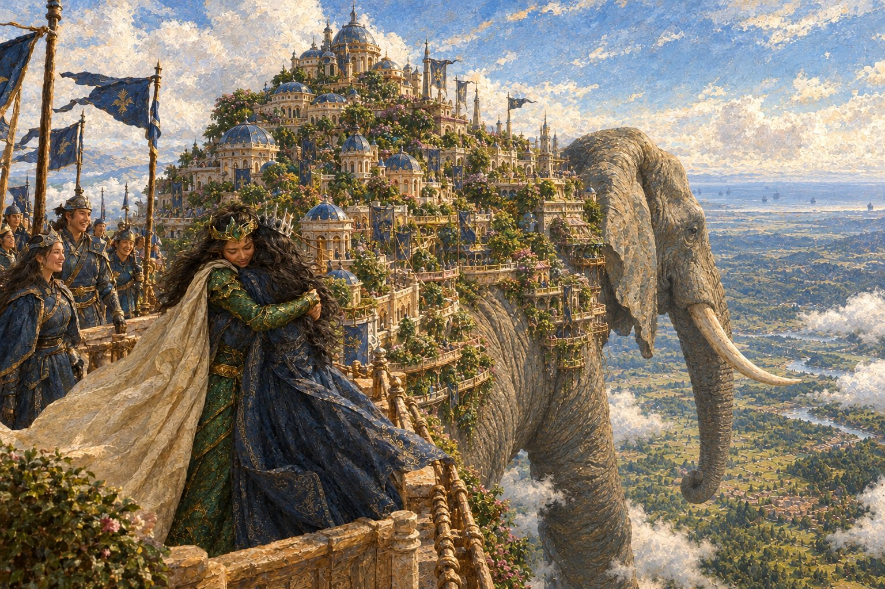
"You're alive," Neya said, and only then realised how scared she'd been.
"Of course I'm alive. They tried to land on us." Aya grinned. "My elephant sat on them."
Neya laughed out loud.
But Aya's smile didn't last. "Neya, how did you even get here? Nothing can sail right now. My own ships haven't left the harbour in weeks."
"My serpents tow us," Neya said. "Naya's shipmasters built my fleet so the serpents could pull it straight through the wild currents. He carved the Serpent Moon himself." She shrugged. "Nobody else could copy it. My serpents won't listen to anyone but me, and pirates never share their shipbuilding secrets."
Aya raised an eyebrow. "He carved you a whole ship?"
"Don't," Neya said.
"I didn't say anything."
"Your face did."
Aya laughed, then grew serious again and led her to the edge of the city, where they could see all the way to the horizon.
"Two days ago," Aya said, "one of my scouts saw a fleet. A huge one, the biggest anyone has ever seen. Red sails, coming from the north and heading south. Straight for Eastern Moyin."
"The centre of the realm," Neya said.
"And it came from the direction of KZ Roselynd." Aya's hands tightened on the railing. "I haven't heard from KZ in weeks, Neya. I think the castle has already fallen."
Neya was quiet for a moment. Then she nodded.
"Then we split up," she said. "You go to KZ. Your army can march there over land, and nobody fights on land like Ayaluna. Take the castle back and find out what happened."
"And you?"
"I'm going to the centre." Neya looked south, where the red fleet had gone. "Whatever they're planning, that's where it's happening."
Aya grabbed her hand. "Be careful. Please."
"I'm always careful."
"You are never careful."
Neya smiled. "Then I'll start today."
Chapter 13 — The Eastern Council
Cinta Island smelled of roses and sea salt, and the beach was covered in red soldiers holding hands.
Naya stopped at the end of the dock and stared. There were dozens of them, sitting in the sand in pairs, gazing into each other's eyes, some of them writing poems. Nobody was guarding them. Nobody needed to.
"Love spells," said a voice beside him. Queen Cinta had come down to meet him, her pink crown glinting in the sun. "They tried to invade. I made them fall in love with each other instead. It's very hard to fight when you'd rather be holding hands."
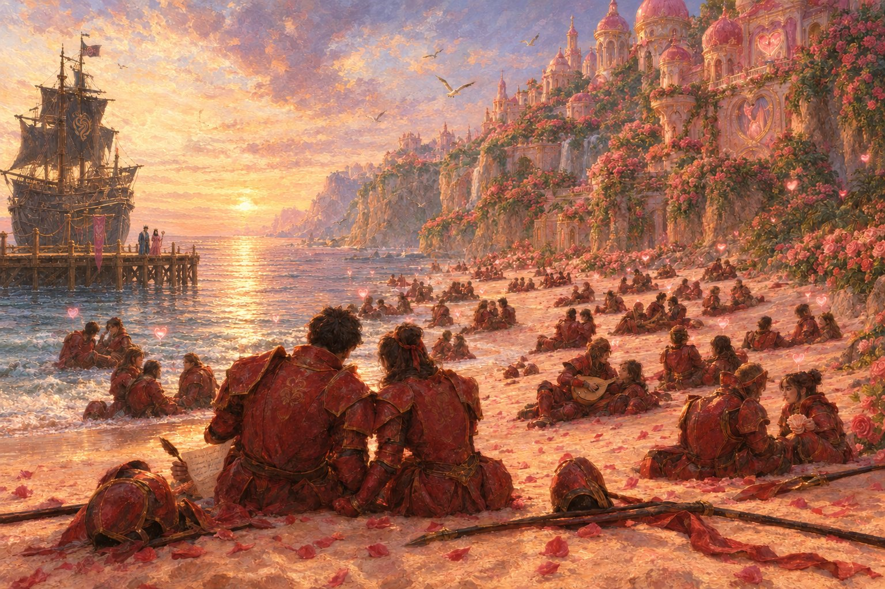
"That's terrifying," Naya said.
"Thank you." She smiled. "Come on. Everyone's waiting."
The council was meeting in Cinta's rose garden. Around the stone table sat three more queens. Jeje of the Jecroft Islands, in her gold armour, a map spread out in front of her. Samantha of Sam's Kingdom, with soot still on her hands from the forges. And Yopis of Yopisheim, cold and straight-backed in her ice-silver crown, who looked at Naya the way you'd look at a shark that had walked into your kitchen.
"Pirate," Yopis said.
"Queen Yopis."
"My people spent years keeping your kind off our shores."
"I remember," Naya said. "You were very good at it."
Something that might have been the start of a smile crossed Yopis's face, and was gone again. "Neya trusts you," she said. "So for now, I'll try to. Sit down."
He sat.
"We questioned the prisoners," Cinta said. "When you're in love, you'll tell anyone anything. They told us who sent them." She paused. "They call him Emperor Raian."
Naya went very still.
"They're not ordinary soldiers," Cinta went on. "They worship a demon. One the realm forgot a long time ago. They're trying to wake her up. That's all they know. They don't even know her name."
Jeje was watching Naya. "You know that name," she said. "Raian."
Naya didn't answer for a moment. Then he said, "Tell me the rest of the news first."
Jeje let it go, but she didn't stop watching him.
"It's bad," she said. "My islands stretch along both the north-east and south-east of the great island, so my people hear everything. Zav's Broccolingdom has fallen. So has Shareen's Mart. And there's a war at Beryl Kingdom, right in the middle of the great island. Mayzha and Sharleen are holding the line together, but they're outnumbered."
"And there's a general," Samantha said. "Tama. My scouts say he fights at the very front of his army, with fire. They say nobody who faces him walks away."
Jeje tapped the map. "I can get my people across the sea through my tunnels. Underground. But I can't move whole armies that way. Not enough room." She looked up at Naya. "You, on the other hand."
"I can calm the sea," Naya said. "Not all of it. Only the water around me and my ships. But anything that sails in my wake can follow."
"Then you came at the perfect time," Cinta said. "You can take Yopis's fleet and Sam's army to Beryl."
They made the plan before the sun went down. Cinta would stay behind and guard the south-eastern kingdoms. Jeje would take her adventurers into the tunnels to find out what the red army was planning. Naya, Yopis and Sam would sail for Beryl.
As the others left, Jeje hung back.
"Raian," she said quietly. "Who is he, Naya?"
Naya looked out at the sea for a long time.
"Someone I used to know," he said. And that was all.
Chapter 14 — Thorns on the Water
Aya took KZ Roselynd back in a single afternoon.
It was almost too easy. Her elephants marched over the hills, and the red soldiers left to guard the rose castle took one look at them and ran. There were barely any of them left. Most had already sailed south.
But when Aya walked into the castle, her stomach dropped.
The rose gardens had been stripped bare. The workshops were empty. The storerooms where KZ kept her rosewood and rose enchantments had been cleaned out completely. And the enchanters, every single one of them, were gone.
Aya stood in the empty workshop and looked south.
"They're not just stealing roses," she said to her captain. "They're stealing the magic. And they're going to use it on something." She thought of Neya, sailing straight toward that fleet. "Send a rider. Fast."
But the rider would be far too late.
Neya was angry.
She had been angry since Opita, and it had only grown. Everyone in this realm was her friend. Opi, Pam, Maureen, KZ. Every one of them. Someone was hurting them one by one, and she was tired of arriving after the damage was done.
So when her lookouts spotted the red fleet near the centre of the realm, she didn't wait.
"Full speed," she ordered. "Straight at them."
Her captain hesitated. "Your Majesty, we don't know how many…"
"It doesn't matter. Go."
Her serpents surged forward, pulling the black ships through the waves. The red fleet grew bigger and bigger. Then, just as they came in range, the red ships turned side-on and opened their gun ports.
The cannons didn't fire iron.
They fired light. Pink and red, blooming in the air like flowers. Rose and tulip magic, packed into every shot. When the first one hit a Hangkas ship, the deck burst into thorny vines that tore the planks apart. The next one hit a serpent, and the serpent shrieked as petals hard as steel cut into its scales.
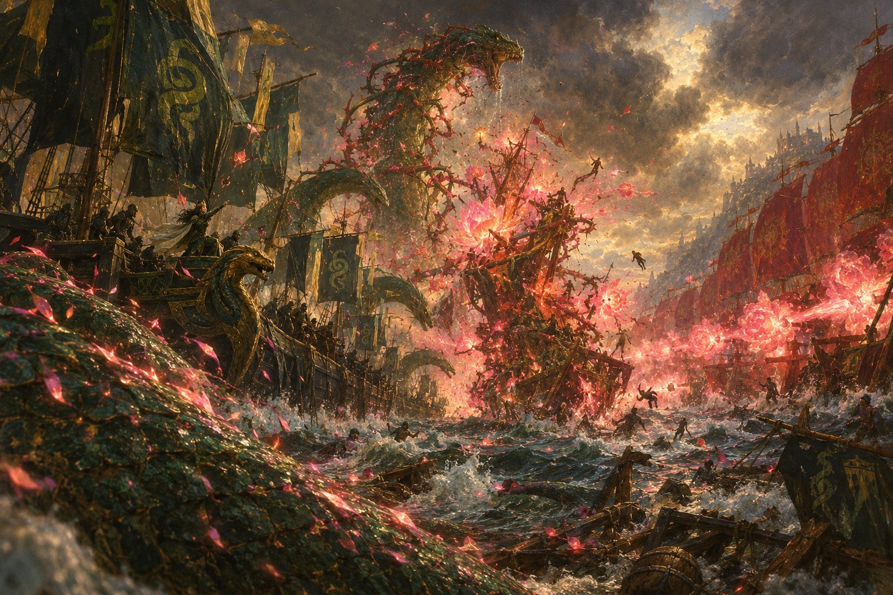
Neya's stomach dropped. She had seen this before, on the armour of red soldiers. She had never thought they could turn it into this.
"Fall back!" she shouted. "Fall back!"
It was too late for many of them. Shot after shot tore through her fleet. Ships cracked and sank. Men went into the water. Her serpents fought to drag the survivors away from the guns while the red fleet sailed on, untouched, toward Eastern Moyin.
By nightfall, what was left of the Hangkas fleet limped onto the shore of Western Moyin.
Kaylee met her on the beach. She didn't say anything at first. She just pulled Neya into a hug that nearly cracked her ribs.
"I charged," Neya said into her shoulder. "I didn't think. I just charged."
"I know," Kaylee said. "I almost did the same thing a few days ago. Jasmyn stopped me." She let go and looked Neya in the eye. "Nobody stopped you. That's all."
That night they sat by a fire on the beach and compared everything they knew. The armour that shrugged off swords. The cannons that bloomed into thorns. The enchanters taken from Moyin and from KZ.
"It's Maureen's magic," Kaylee said. "And KZ's. They're using our friends' own power against us."
Neya stared into the fire. "Then we're not attacking again until we're ready. Properly ready."
"Jasmyn's coming back," Kaylee said. "She promised. With dragons."
"Then we wait for Jasmyn," Neya said.
Out on the dark water, far to the east, the red fleet's lights glowed over Eastern Moyin like a crown.
Chapter 15 — The Book in the Library
Rahel's healing halls were full.
Every bed held someone: the tulip enchanters from Moyin, soldiers from the front, mermaids with salt burns. Jasmyn had been helping for days, carrying water and bandages, and she was so tired she could barely see straight. But the enchanters were waking up now. Their skin was getting its colour back.
"Your dragonriders are ready," Rahel told her. "Every saddlebag is full of salve. Your riders can take it to every kingdom that needs it."
"Good," Jasmyn said. "Then I'm going back to Kaylee. I promised her."
Before she could leave, something white flapped in through the library window, crash-landed on a pile of books and quacked loudly.
A duck.
Rahel and Jasmyn looked at each other. Then they both ran for it.
The letter on its leg was from Pam, and it had everything: the ambush at Pam's Wonderland, Naya's clouds, Nonne's capture and her terrible end. And the warning Nonne had given before she died.
They're trying to bring back a demon. Something the Empress buried a long time ago.
Jasmyn read it twice. "A demon? What demon?"
Rahel had gone pale. Without a word she walked into the deepest part of her library, where the oldest books were kept, and came back with a heavy volume bound in grey leather. She set it on the table and opened it.
"There was a war," she said. "A long time ago. Before Moyin took the centre island for its own. Before most of our kingdoms even had names." She turned the brittle pages carefully. "It was fought against a demon of pure hatred."
Jasmyn leaned in. The page showed a drawing of a woman in a black crown. Her face had been scratched out.
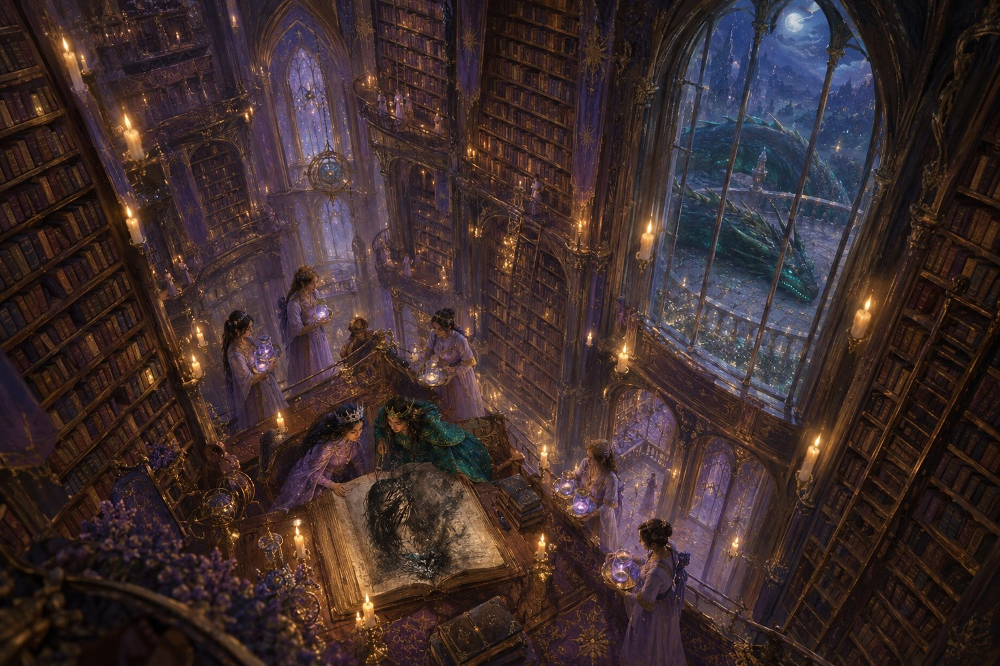
"Who is she?"
"Nobody knows. That's the point." Rahel ran her finger along the text. "Her name was erased from history. Every book, every song, every memory. All gone. It says she was once an ordinary woman of this realm. But she was so full of jealousy and insecurity and spite that she turned to forbidden magic and made herself into a demon."
"And then?"
"And then Neya defeated her." Rahel turned another page. "The writer says the whole realm was terrified of her. Her power was the most frightening thing anyone had ever seen. But when Neya was asked about her afterward, she said only one thing." Rahel read it out. "'She was a very boring villain.'"
Jasmyn laughed in spite of herself. "That sounds like Neya."
"It does." Rahel didn't laugh. "But the person who wrote this didn't think she was boring. They thought she was the end of the world."
She closed the book.
"If someone is trying to bring her back," she said, "Neya needs to know. Now."
Jasmyn was already running for her dragon.
Chapter 16 — The Cat Kingdom Holds
In Beryl Kingdom, even the soldiers were cats.
Cat archers lined the walls. Cat knights in tiny armour guarded the gates. And at the front of it all, on the highest tower, sat Beryl herself: a large, fluffy white cat in a crimson-and-gold gown and a small crown, watching the battle with cold green eyes. Next to her stood Queen Mayzha, sword in hand.
They were losing.
Queen Sharleen's knights had come from the north to help, with pink banners and silver armour, and they had held the line for days. But the red army just kept coming, and at the very front of it, every single time, was Tama.
He was huge, wrapped in red armour, and he fought with fire. When he swung his blade, flames poured out of it in long, roaring arcs. Walls melted. Shields turned to ash.
"He's not even tired," Sharleen said, wiping blood from her lip. "We've been fighting for three days and he's not even tired."
Mayzha was looking at the red army's camp behind Tama. Carts were going back and forth. Full carts coming in, empty carts going out.
"Look," she said. "Broccoli. And crates with Shareen's mark on them."
Sharleen frowned. "So?"
"So that's why they took the Broccolingdom and Shareen's Mart. Not to keep them. To feed this army. As long as those carts keep coming, they can fight forever."
A cat scout bounded up the tower steps and meowed urgently at Beryl. Beryl turned her head toward the sea, and everyone looked.
On the horizon, sailing past Beryl, was another red fleet. Bigger than the one they were fighting. Much bigger. It was heading west, toward Eastern Moyin.
"That isn't even for us," Mayzha whispered. "That's something else."
Below them, the gate cracked. Tama's fire was eating through it.
Sharleen raised her sword. "Then we'd better make our last stand a good one."
That was when the sky went dark.
Not with smoke. With clouds. Huge white clouds, rolling in from the south faster than any wind. Lightning flickered inside them. And under the clouds, sailing across a sea that had suddenly gone smooth as glass, came a fleet: Yopis's ice ships, Sam's war galleys, and at the front, a single blue pirate ship.
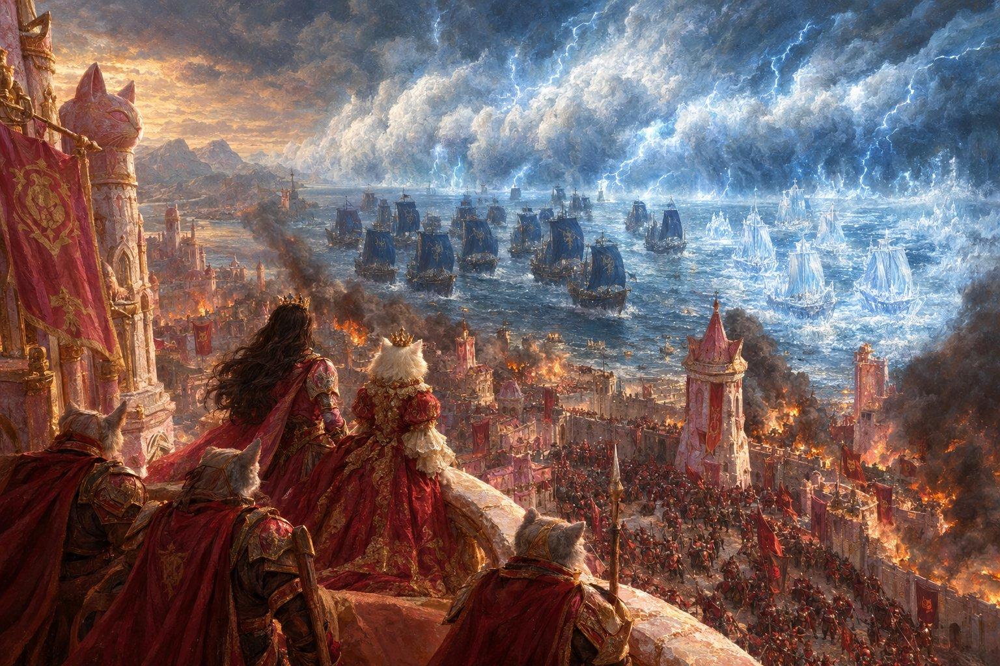
The first bolt of lightning hit the red army's siege towers. The second hit their cannons. Then Yopis's fleet opened fire, and a wall of ice slammed down between the gate and the red army. Sam's soldiers poured onto the beach in black armour, every sword sharp from her own forges.
Naya landed on the wall in a burst of cloud, right next to Mayzha.
"Sorry we're late," he said.
Mayzha stared at him. Beryl the cat stared at him. Then Mayzha laughed, a little wildly. "You're not late. You're right on time."
With all five armies fighting together, the battle turned fast.
The red army had been ready to fight two queens. It wasn't ready to fight five, plus a storm. Their lines broke. Their soldiers ran for their ships.
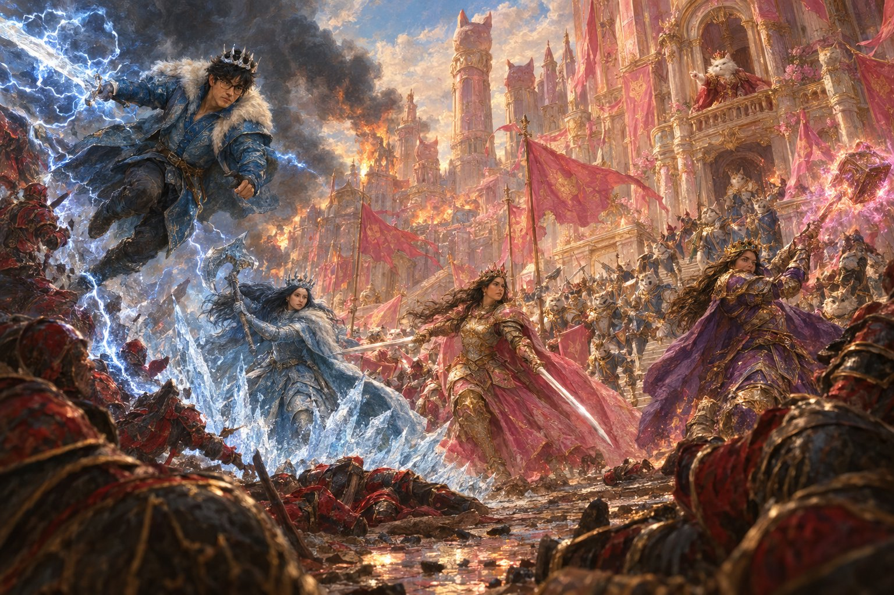
Across the battlefield, Naya saw Tama for the first time. The general stood in the middle of the burning field, fire curling around his blade, and stared straight back at him. Then he smiled, as if he'd recognised Naya. He turned and walked away into the smoke with his retreating army.
Naya watched him go and didn't follow. Not yet.
That evening, the five of them sat in Mayzha's half-wrecked throne room while cats brought bandages and tea.
"We can't go any further," Sharleen said honestly. "We've lost too many. My knights need to heal, and Beryl needs rebuilding."
"Then stay," Naya said. "You've done more than enough." He looked at Yopis and Sam. "But the red army is getting its food from Shareen's Mart. If we take that back, we cut off their supplies."
"And we find out what happened to Shareen," Sam said.
Yopis stood up. "Then we leave at dawn."
Beryl the cat, from the top of the throne, yawned in approval.
Chapter 17 — Shareen's Toys
Shareen's Mart used to be the busiest place in the east. Its streets were full of shops selling rare toys and shining crystals, and people came from all over the realm to buy things they didn't need.
Now it was full of red soldiers.
Naya, Yopis and Sam fought their way north, town by town, toward the capital. They built a supply line as they went, with Sam's wagons carrying food and weapons up behind them, so the army wouldn't run out halfway. The red army fought back hard. There were more of them here than at Beryl, and they knew how important this kingdom was to them.
But something kept bothering Naya.
"Where is everyone?" he said one night, standing in an empty market square. "Shareen's people. Where are they?"
Yopis looked around. "Prisoners, probably."
"Then where are the prisons? Where are the camps? We've taken six towns and haven't found a single one of Shareen's people. Not a prisoner. Not a body. Nothing."
Sam picked up a toy from the ground: a small soldier in pink armour, about the size of her hand. There were hundreds of them scattered around the square, on shelves, in windows, in the gutters.
"Strange," she said. "The red army emptied every shop in this town. But they didn't bother with the toys."
Naya looked at the toy soldier. The toy soldier, he could have sworn, looked back.
They reached the capital three days later.
The red army was waiting in front of the walls, more of them than Naya had ever seen in one place. Yopis drew her axe. Sam's soldiers locked shields. Naya called up his clouds.
And then, before anyone had swung a single sword, the red army began to fall.
Not from the front. From behind.
Soldiers at the back of the red lines dropped without a sound. Then the ones in front of them. Then the ones in front of those. It moved through the army like a wave, so fast that by the time the front line turned around to see what was happening, there was almost nobody left behind them.
Standing in the middle of the fallen red army were soldiers in pink armour. Small ones and tall ones, toy-bright and smiling, with crystal blades in their hands.
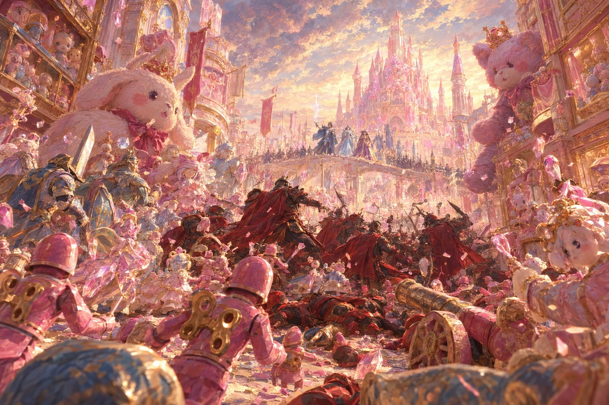
"Oh," Sam breathed. "The toys."
The last red soldiers threw down their weapons and ran.
Queen Shareen came out through the crystal gates to meet them, in a lilac dress, with round glasses and a crystal wand in her hand, looking extremely pleased with herself.
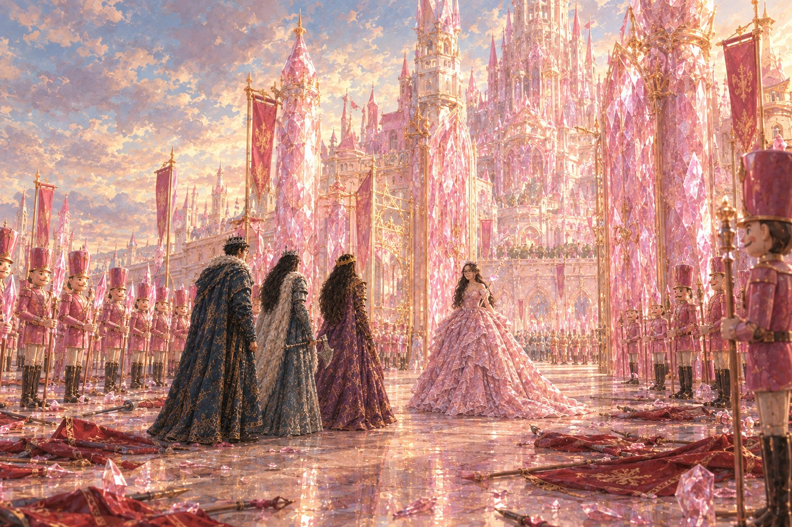
"Welcome," she said. "Sorry about the mess."
"You were toys," Naya said. "This whole time. Your whole kingdom."
"The moment the red army landed, I turned myself and every one of my people into toys," Shareen said. "Then we just sat on the shelves and waited. Nobody pays attention to toys." She smiled. "They walked right past us every day. They talked about everything in front of us."
"So what did they talk about?" Yopis asked.
Shareen's smile faded.
"They're gathering at the centre island. Eastern Moyin. Every red soldier in the realm is going there. They're going to bring back a demon." She tapped her wand against her palm. "They came here for supplies, along with the Broccolingdom's food. Lucky for us, everything they wanted from my kingdom was a toy at the time. They couldn't take anything useful." She looked very satisfied about that. "They've been living on broccoli."
"What else?" Naya asked.
"Their general. Tama. He's holding the western shore of the great island, the stretch of coast that faces the centre. Every supply ship going to Eastern Moyin leaves from there. If you want to stop them, that's where you have to go." She looked straight at Naya. "And you'll have to go through him."
Naya nodded slowly.
"Then here's the plan," he said. "Everyone hits the supply line. Ships, wagons, docks, all of it. Burn their food and they can't hold the centre."
"And Tama?" Sam asked.
Naya was already looking west.
"Tama's mine."
Chapter 18 — A Name Nobody Says
Jasmyn's dragon came down on the beach of Western Moyin in a spray of sand, and Kaylee was already running across the sand to meet her.
"You came back," Kaylee said.
"I said I would." Jasmyn slid down, saw Neya standing by the fire, and stopped. "Neya? What are you doing here? What happened to your fleet?"
"Long story," Neya said. "I'll tell you mine if you tell me yours."
Before either of them could start, the sea along the shore began to glow blue.
Vines rose out of the water: thick blue ones, twisting into a bridge, and walking across the bridge came Queen Talitha with a long line of blue-robed enchanters behind her.
"I heard you might need help," Talitha said. "And my garden can only grow so many barricades before it gets bored."
That night, the four of them sat around the fire, and Jasmyn told them everything. Pam's ducks. Naya's clouds. Nonne. And the book in Rahel's library, the demon of pure hatred whose name had been erased, the woman who had turned herself into a monster.
Neya listened without a word. When Jasmyn finished, she let out a long sigh.
"So that's who they want to bring back," she said. "That boring demon."
The other three looked at her.
"You know who she is," Talitha said.
"I know who she is." Neya poked the fire with a stick. "And I think I know who's behind all this too."
"Tell us," Kaylee said.
Neya hesitated. Then she said it.
"Her name was Hanji."
The moment the word left her mouth, the fire seemed to dim. Kaylee put a hand on her stomach. Jasmyn went pale. Talitha's hands, glowing softly a moment before, went dark.
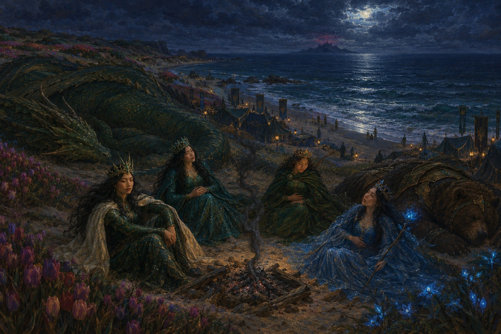
It wasn't just a name. It was a feeling: heavy, sick and sour, like waking from a nightmare you can't quite remember. And with it came memories they hadn't known they still had. A black crown. A cold voice. A woman who had wanted to tear the whole realm down and rule over the pieces, who couldn't stand to see anyone else happy. A woman who hated Neya because Neya wanted everyone to grow and do well together.
"I remember her," Jasmyn whispered. "How do I remember her? I didn't remember her five seconds ago."
"Naya and I made everyone forget her name," Neya said quietly. "We did it together, after she fell. Hearing it made people feel sick. So we took it away. The only ones who still knew it were the two of us."
"Then who…" Talitha started.
"There was one more." Neya's voice went hard. "Raian. He sailed on Naya's crew, a long time ago. He was in love with her. Secretly. When she fell, he left the realm, and nobody ever saw him again." She threw the stick into the fire. "Somehow, he still remembers her name. And if anyone could bring her back, it's him."
For a long while, nobody spoke. The old hatred sat with them by the fire, as fresh as the day they'd forgotten it.
"So how do we stop him?" Kaylee said finally. "They're on the centre island with a whole fleet. We can't sail there. Jasmyn can't carry everyone on dragons."
"And even if I could," Jasmyn said, "they'd shoot us out of the sky with those cannons."
Neya opened her mouth to answer, and then one of Kaylee's soldiers came running up the beach.
"Your Majesties! There's a door. Down in the cliffs. A door just opened in the rock, all by itself."
The four queens looked at each other.
"Jeje," Neya said, and for the first time in days she smiled. "She's alright."
They were already running.
Chapter 19 — Fire and Thunder
The western shore was on fire.
Yopis's ice ships rammed the red supply boats one after another. Sam's soldiers burned the docks. Shareen's toy army swarmed over the warehouses, cutting ropes and smashing crates. All along the coast, the red army's food and weapons went up in smoke.
And on a black rock at the edge of the sea, Naya stood face to face with Tama.
Up close, the general was even bigger than he had looked at Beryl. Heat poured off his armour. The air around him shimmered.
"Pirate King," Tama said. "I've wanted to meet you for a long time."
"I can't say the same."
Tama smiled. "You don't know who I am, do you? She never mentioned me." He tilted his head. "I loved her first, you know. Neya. I asked her to be mine, and she laughed at me. Then she chose you. A pirate. A thief who sails around in circles drawing maps."
Naya said nothing.
"So here's what's going to happen," Tama went on. "When this is over, when the demon is awake and this realm belongs to us, I'm going to find your Empress. And I'm going to make her fall to her knees, and she'll spend the rest of her life as my slave."
Naya drew his sword.
He didn't say anything at all.
Fire met lightning, and the sky exploded.
Tama's first swing threw out a wave of flame as wide as a street. Naya's clouds swallowed it, and the clouds hissed and burned away to nothing. Naya answered with a spear of lightning, then another, then ten more, a storm of white spears falling from the sky. Tama cut through them with his blade, and fire roared up to meet each one.
They fought across the rocks, across the beach, out over the water. Naya rose into the air on his clouds and Tama followed on a pillar of flame, and the fight went higher and higher, until the whole sky over the eastern realm was lit up red and white and gold.
Tama's fire was everything his scouts had said. Every cloud Naya called, Tama burned away. Every time Naya hid inside the storm, the fire found him. His cloak was scorched. His hands were blistered. His breath was coming short.
But Naya didn't stop. The lightning spears kept coming, never slowing, never stopping, one after another after another, until Tama's armour was cracked and smoking and he was breathing as hard as Naya was.
They broke apart, high above the sea, and hung there in the air, facing each other.
Both of them were at the end. Both of them knew it.
Tama raised his blade above his head, and every bit of fire he had left poured into it, until it burned so bright it was like holding the sun.
Naya closed his eyes.
He let his clouds go. All of them. They drifted out around Tama in a wide, soft ring, gentle as fog.
Then Naya pulled every drop of lightning in his body into his sword, and moved.
He didn't fly at Tama. He became thunder. For one instant he was the lightning itself, a single white line across the whole sky, and the sound came after him, a crack so loud they heard it on every island in the east.
Tama swung. But the clouds were all around him, thick and blinding, and he couldn't see where the strike was coming from.
Naya's sword went through him.
Through his armour, through his fire, through all of him, and out the other side. Tama hung in the air for one more moment, his blade still burning. Then the two halves of him fell, and the fire went out, and the sky went quiet.
Everyone in the east had seen it.
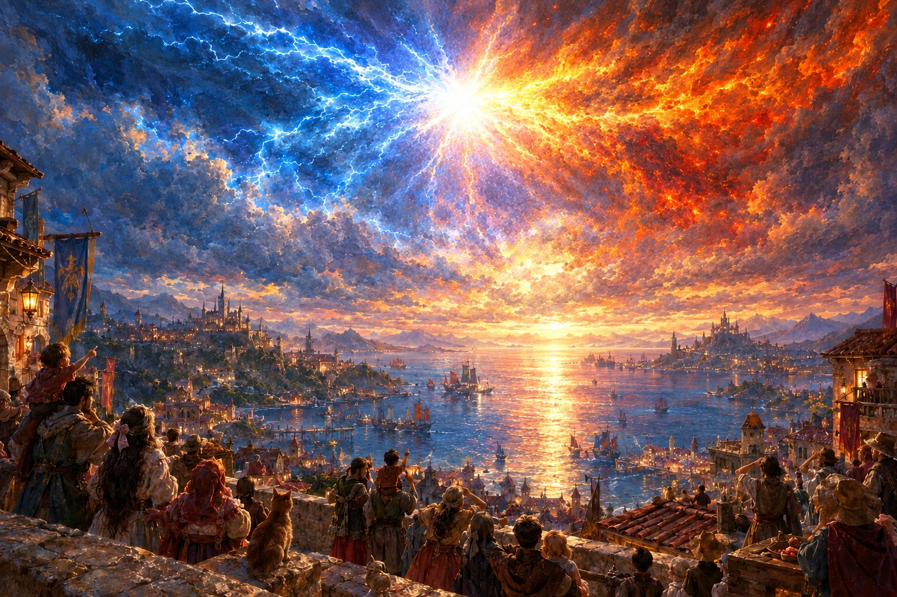
In Beryl, the cats stood on the walls and stared at the sky. At Cinta's island, the lovesick prisoners stopped writing poems and looked up. On the road to Jeje's door, Neya stopped walking and watched the red and white light flicker far away in the east.
Kaylee came up next to her. "Is that…?"
"Naya," Neya said.
She watched until the last of the lightning faded. Her heart was pounding. But her voice, when she spoke again, was calm.
"He's got it," she said, and turned back toward the cliffs. "Come on."
Far away, high above the clouds, Naya was falling.
He had nothing left. No clouds, no lightning, not even enough strength to open his eyes. The fight had carried them so far that the sea below him wasn't the sea by the great island any more. It was the far east, where pink lanterns floated over the water.
"Neya," he murmured, to no one, as the wind rushed past. "I'll leave the rest to you."
He fell toward Laura's Island.
And something green flashed up to meet him: a streak of green lightning running up the side of a floating lantern, leaping off the top, catching him in mid-air.
Zav landed on a lantern platform with the Pirate King in his arms, breathing hard.
"Laura!" he yelled. "Laura, I need help! The Pirate King just fell out of the sky!"
Chapter 20 — Under the Realm
The door in the cliff was round, carved with gold leaves, and standing in the middle of it, leaning on her glowing green staff, was Jeje.
"Took you long enough," she said.
Neya hugged her. Jeje let her, for about two seconds, then patted her on the back and stepped away. "Alright, alright. Bring your armies. All of them. There's room."
"I thought your tunnels couldn't fit armies," Kaylee said.
"The tunnels I show people can't." Jeje smiled. "This isn't those."
Behind the door, a staircase spiralled down into the rock. They went down and down, past torches, past carved doorways, past the sound of running water. Then the stairs opened out, and all four queens stopped.
It was enormous.
A whole world under the ground. Caverns as big as cities, lit by glowing green stones. Bridges crossing over rivers. And everywhere, running off into the dark in every direction, there were rails. Railway tracks, hundreds of them, with little carts and long trains waiting on them. Jeje's people moved everywhere: checking maps, sending messages, watching strange mirrors that showed the surface far above.
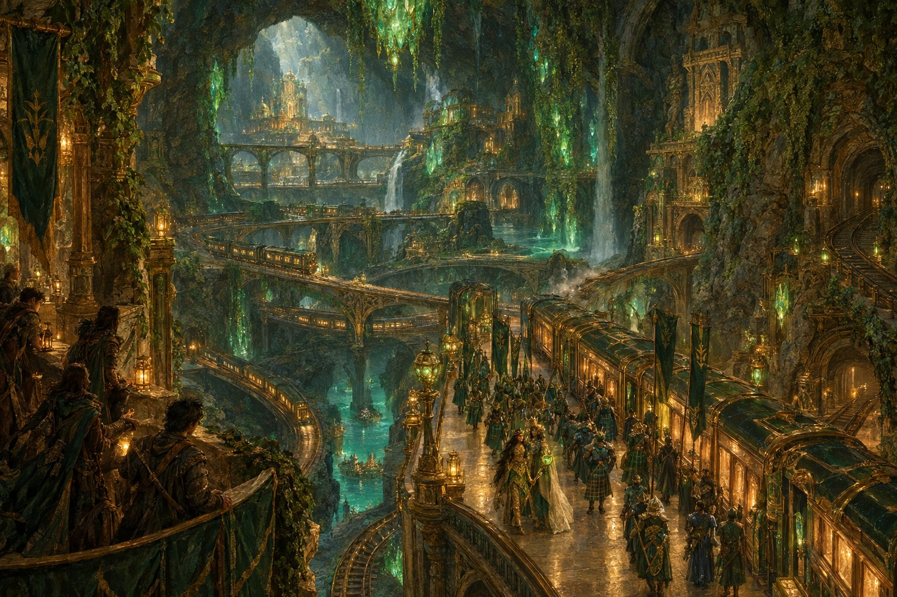
"This is the maze," Jeje said. "It runs under every kingdom in the realm. My people keep watch over all of it."
Talitha turned in a slow circle. "I never knew this was here."
"You're not supposed to. Nobody is. Nobody except Neya." Jeje gave them a look. "This is the realm's last defence. If everything else falls, this is what's left. So when this is over, I might have to make you all forget you were ever down here."
"Fine," Kaylee said immediately. "Don't care. Where's Raian?"
"Same," said Jasmyn.
"Same," said Talitha.
Jeje sighed. "Good. Because I wasn't going to give you a choice."
Neya was looking at the rails, the glowing stones, the old carvings on the walls. "It's been a long time since I was last down here," she said softly.
"It has," Jeje said. "Last time was the war with her."
Jeje unrolled a map on a stone table and told them everything.
"First, your pirate's alive." She looked at Neya. "My people saw the whole fight. He beat Tama. Then he fell, somewhere near Laura's Island. That's all I know."
Neya let out a breath she hadn't known she was holding. "He's alive."
"He's alive. Now listen." Jeje pointed at the centre island. "The red army's power comes from rose and tulip enchantments. They steal it from KZ and Maureen and the captured enchanters, and they pack it into their armour and their cannons. KZ and Maureen are being held here, in the great windmill on the east side of the island."
She moved her finger to the middle of the island. "And here, in the ruins of the old palace, is where Raian is getting ready to bring her back. There's a black stone in the middle. He's surrounded it with enchanters." Jeje looked up. "He's not just waking her. He's going to wrap her in rose and tulip magic, the same way they wrapped their soldiers. Then he'll control her, and with her, the whole realm."
"Then we split up," Neya said. "I'll go for Raian. The rest of you get KZ and Maureen out. If we cut off the enchantments, he loses his armour, his cannons, all of it."
Kaylee frowned. "You want to go alone? Again?"
"Not alone," Neya said. "With my soldiers. Every one I have left." She met Kaylee's eyes. "And this time I'm not charging. This time we're coming up from underneath, where they'll never expect it."
Kaylee looked at her for a long moment, then nodded.
The armies boarded the trains: Neya's soldiers in green and butter, Kaylee's bear warriors, Jasmyn's dragonriders with their dragons squeezed into the biggest carriages, Talitha's enchanters, and Jeje's adventurers riding on top. The carts began to roll, slowly at first, then faster, rattling down the dark tunnels toward the centre of the realm.
Nobody spoke much. They were all thinking the same thing.
Please let us be in time.
Chapter 21 — The Ring of the Moon
Naya woke up in a room full of pink light.
Paper lanterns hung from the ceiling. Through the round window he could see clouds drifting by, below him. Someone had bandaged his hands, his arms and most of his chest.
He sat up. Everything hurt. He started getting out of bed anyway.
"No, no, no." Zav was in the doorway in a flash, literally. "Lie down. You fell out of the sky."
"I have to go."
"You have to lie down."
Behind Zav, a small figure in pink robes peeked around the door frame: Queen Laura, her round glasses pushed up on her nose, holding a lantern in both hands.
"You should really rest," she said quietly. "You were very… broken."
"Thank you," Naya said. "Both of you. Really. But I can't stay." He held up his hand with the silver ring on it. "The Grand Map is still empty. I have to chart the whole realm again, every kingdom, before anyone can sail safely. And I've been thinking." He turned the ring. "This ring broke once. If someone did it once, they can do it again. I need to put the map into a new ring. A stronger one."
A duck flew in through the window, landed on the bed and quacked.
Zav untied the letter from its leg. It was from Pam, sent days ago: the news from her kingdom, from Rahel's library, about the demon. Naya read it twice and was quiet for a long time.
Laura shuffled her feet. "Um. About the ring."
They both looked at her. She went pink.
"There's a forge," she said. "Here, on the island. An old one. It's an ancient Chinese forge that belonged to my ancestors. They made all our lanterns' first flames in it. But nobody's been able to light it for a very long time. It needs more power than we have."
Naya was already getting out of bed.
The forge sat at the top of the tallest lantern tower: a great round furnace of red stone, with golden dragons curling around its sides and a pair of huge bellows shaped like dragon wings.
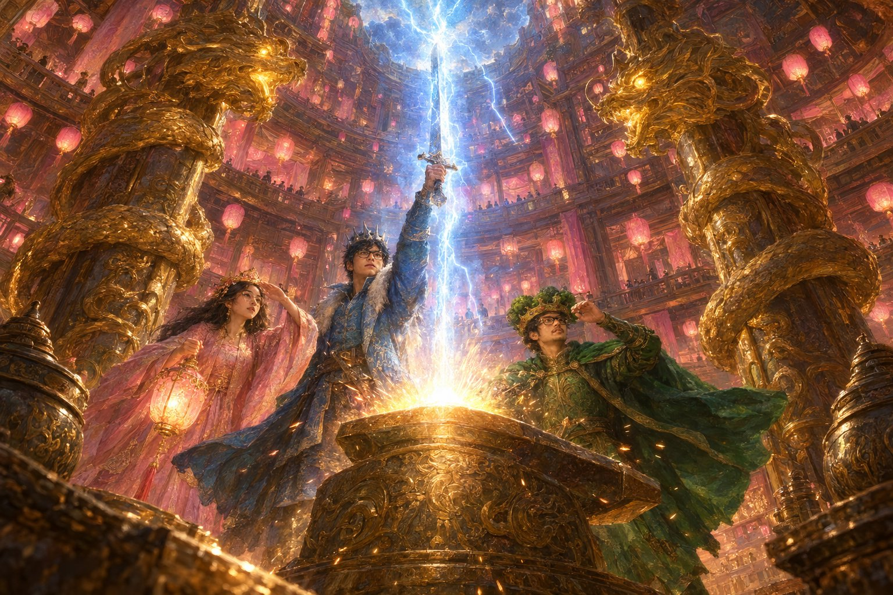
Naya put his hands on it.
He had almost nothing left after the fight with Tama. But he found what was there, every last spark, and pushed it into the stone. Lightning crawled over the golden dragons. Their eyes lit up. With a deep roar, the furnace caught, and the whole tower glowed red.
Laura gasped. Zav cheered.
Laura brought him gold, a little lump of it, the brightest in her treasury. Naya melted it in the dragon furnace and shaped it with lightning, carefully, the way he used to carve ships. When he lifted it out and let it cool, it was a ring.
A gold ring with a gentle curve along one side, like a sleeping snake. Like the moon on the Hangkas banners.
"The Ring of the Moon," he said quietly.
"It's for her, isn't it?" Laura said. "The snake."
Naya didn't answer. He didn't have to.
That evening, he stood at the edge of Laura's island and looked west.
"Here's the plan," he said. "First, we take back the Broccolingdom. Zav, you're coming."
"Obviously."
"Laura, can your lanterns carry us?"
Laura nodded, then went pink again. "I… I'll come too. This time."
Zav grinned at her. She looked at her shoes.
"Then from there to KZ Roselynd," Naya went on, "and Ayaluna, and Opita. Every kingdom I chart goes into the new ring. By the time I reach the Hangkas, the map will be whole again."
"And the centre island?" Zav asked. "The demon?"
Naya looked toward the middle of the realm, where something dark was gathering over the water.
"That's Neya's," he said. "And she's got it."
Chapter 22 — The Great Windmill
The great windmill stood on the eastern hills of the centre island, taller than any tower in Moyin. The red army had turned it into a fortress: soldiers on every floor, cannons on every balcony, and in the cellars beneath it, the prisoners.
The red soldiers guarding it never knew what hit them.
Jeje's tunnels came up right underneath the windmill, and Jeje's tunnels came with traps. Floors opened under whole squads. Walls swung round and sealed off corridors. Nets dropped from the ceilings. Rolling stones came out of nowhere and flattened the cannons. In ten minutes, half the garrison was gone and most of their weapons and supplies were buried under rubble.
"Now," Jeje said.
Kaylee's bears smashed up through the floor. Jasmyn's dragons burst out of the hillside and set the upper floors on fire. Talitha's vines tore the doors off their hinges. The armies poured into the windmill, and the red soldiers who were left didn't stand a chance.
They found KZ and Maureen in the deepest cellar.
Both queens were sitting back to back inside a glowing shield, one half made of rose vines and the other of tulip petals, wound tightly around them. They looked tired and thin, but they were alive. When KZ saw Kaylee's face through the vines, she burst out laughing.
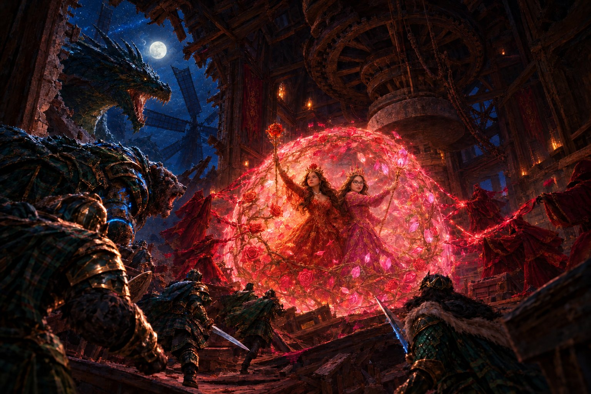
"Took you long enough!"
The shield fell, and Kaylee picked up both of them at once in a giant hug.
"We kept ourselves safe," Maureen said, when she could breathe again. "They couldn't touch us through our own magic. But they could still drain it. Every day they'd come and pull a little more out, and put it into their armour and their cannons."
KZ's smile faded. "The others weren't so lucky."
In the next cellar lay the enchanters who had been taken from Moyin and KZ Roselynd. Most of them were gone. Drained of every bit of magic they'd ever had, until there was nothing left of them.
Talitha knelt beside them and was quiet for a long time.
Maureen put her hand on KZ's shoulder. "Then let's make sure it means something."
The two queens stood up together. KZ raised her rose staff, and Maureen her tulip sceptre, and their magic, real magic, freely given, poured out over everyone in the windmill. Rose armour bloomed over Kaylee's bears. Tulip petals wrapped around Jasmyn's dragons. Every soldier and rider and enchanter glowed pink and red and gold.
The red army had been using stolen scraps of this power. This was the real thing.
What was left of the garrison fell in minutes. When it was over, the windmill was theirs, every prisoner who could be saved had been saved, and the queens stood together on the top balcony, looking toward the middle of the island.
Something was happening there. The sky over the old palace ruins had turned the colour of a bruise.
"Neya," Jasmyn said.
"Everyone," Kaylee shouted. "Get ready to move!"
Chapter 23 — The Black Stone
The ruins of the old palace lay in the very heart of Eastern Moyin, half buried in grass and tulips. Long ago, before Moyin ever took this island, it had been a kingdom of its own. Its queen had worn a black crown.
Neya came up out of the ground at its edge with her soldiers behind her.
In the middle of the ruins stood a black stone, tall as a person and smooth as glass. Around it, in a circle, stood dozens of enchanters in red robes, chanting. And in front of the stone, with his back to her, stood a man in a long dark coat.
The stone was still black. Still quiet. She had made it in time.
"Raian," Neya said.
He turned around.
He looked older than she remembered, and thinner, and very tired. On his hand was a black ring, smooth and worn, so much like Naya's silver one that her stomach twisted. So that was how the red ships sailed. That was how the Grand Map had been wiped.
"Empress," he said, and smiled. "You came."
"I'm surprised," Neya said. "I really am. I didn't think you'd go this far." She looked at the ring, at the stone, at the enchanters. "You sailed with Naya. You were one of us. And now look at what you've done. Opita. Moyin. All those enchanters." Her voice didn't shake. "I'm sorry, Raian. But I can't forgive this. I have to stop you."
The ground behind her rumbled. Her great serpent rose out of the earth, huge and green, its mouth already opening, waiting for her signal.
Raian didn't even look at it.
"You don't understand," he said gently. "I've been waiting for you."
Neya's hand stopped in the air.
"I've been trying to wake her for so long. Every spell. Every sacrifice. And she never came." He looked at the stone with something like love. "She didn't want to come back. There was nothing here she cared about. Except one thing." He looked back at Neya. "You. The one she hates more than anything. I just needed you to stand where she could see you."
Neya felt cold all over. "Raian…"
"Now you're here, and her hatred has something to hold on to." He pulled a knife from his coat. "And there's only one thing left to give her."
"Raian, don't!"
He pushed the knife into his own heart.
He fell against the stone, and the black ring on his finger cracked in half.
Far out at sea, all around the island, the red ships suddenly lurched. The calm water under them turned wild, and the currents spun them like leaves.
And the black stone began to glow.
Not with light. With darkness. Black poured out of it like smoke, and the stone cracked down the middle, and then it burst apart.
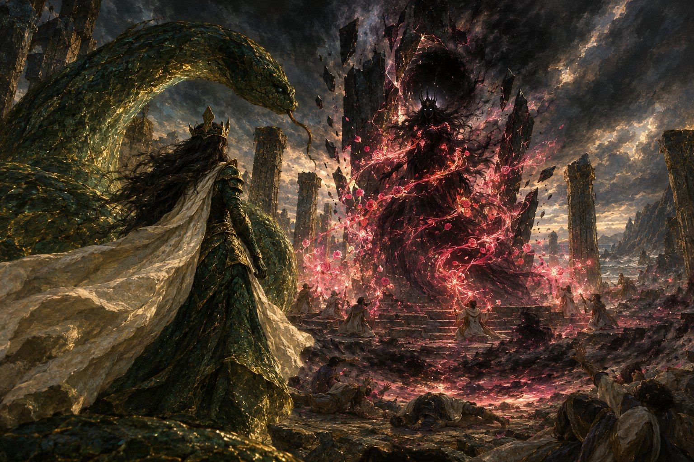
And she stepped out.
The power that came off her was like a wave. Most of the red enchanters dropped where they stood. The few who were still on their feet raised their hands and threw everything they had at her: rose magic, tulip magic, all the stolen power of the realm. It wrapped around her like armour, glowing red and pink against the black.
Hanji laughed.
It was a cold, flat laugh, and it went straight through Neya's bones.
At the great windmill, KZ and Maureen grabbed each other's arms. They could feel it, their own magic, twisted and wrapped around something dark. All across the island, red soldiers dropped their weapons and fell to their knees, bowing toward the ruins. Their demon had come back.
Then the ground began to shake.
It shook harder, and harder, until cracks split the island from one end to the other. With a roar like the end of the world, the centre island broke apart. Great pieces of land tipped and slid, and the sea came rushing in where the ground had been.
"Hold on!" Neya shouted.
Her great serpent swept around her soldiers and caught them on its back as the ground fell away. Her other serpents rose out of the water and scooped up anyone who'd fallen in. Over by the windmill, Jasmyn's dragons were snatching people out of the air, Talitha's vines were catching others, and Kaylee's bears were holding on to anything that floated.
And above it all, floating in the sky, wrapped in black and rose and tulip, Hanji looked down at the wreck of the island and laughed and laughed.
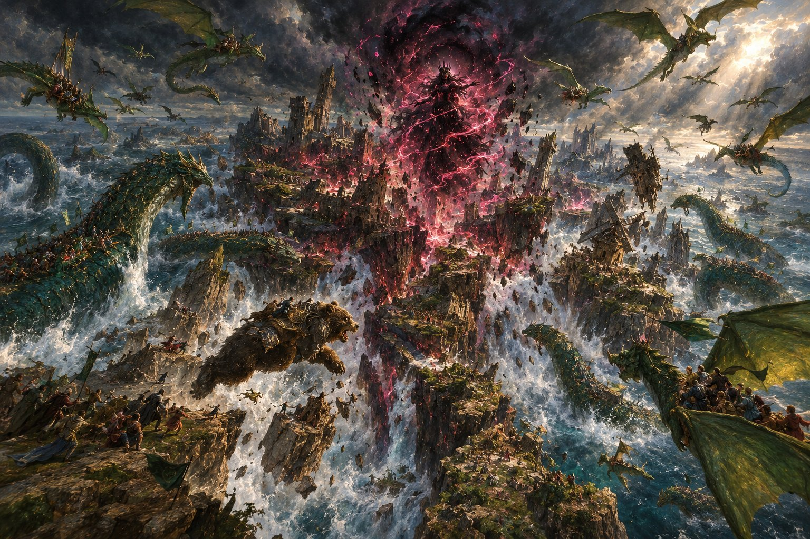
Then she looked at Neya.
"Hello again, little snake."
Chapter 24 — The Boring Demon
Hanji raised one finger, and a beam of pure black shot out of it.
Neya threw herself sideways. The beam hit the water where she'd been standing, and the water didn't splash. It simply vanished, leaving a hole in the sea that slowly filled back in.
Anything the black touched was just… gone.
Neya fired back with a blast of green serpent magic. It hit Hanji square in the chest, and the rose and tulip armour flared pink and swallowed it whole.
Hanji smiled. "Is that it?"
Another beam. Then another. Neya dodged and blocked and dodged again, but she couldn't fight properly. Half her power was holding up her serpents, and her serpents were holding up her soldiers. If she let go, they would drown.
So for the first time in a very, very long time, Neya reached into her cloak and drew her wand.
It was long and dark green, carved like a coiled snake, and she only ever used it against someone strong enough to match her. Nobody had been, for a long time.
She cast spell after spell with it. Green fire, serpent fangs of light, a whip of lightning that cracked across the sky. Most of them missed, because she had to keep turning to block another black beam, or to pull another soldier out of the water. The ones that hit just bounced off the enchanted armour.
She's boring, Neya thought, gritting her teeth. Pure black. That's her whole power. Make things disappear. Her whole plan is she's jealous and wants everyone to suffer. Everything about her is boring.
Boring, and very, very strong.
"Why are you holding back?" Hanji shouted. "Look at you! Protecting your little soldiers. Let them drown! Fight me with everything you've got, or are you still too scared?"
Neya didn't answer. She blocked another beam. Her arm was shaking.
Then the sky filled with dragons.
Jasmyn came first, her dragon glowing with tulip armour, and behind her the whole of her dragon army. On the water below, Kaylee rode in on her bear, and Talitha's vines raced out across the waves in every direction. And on Jasmyn's dragon, right behind her, sat KZ and Maureen.
"Sorry we're late!" Jasmyn shouted. "We had to put everybody somewhere safe!"
Jeje's maze. Every last soldier from the windmill was safe underground.
"Your turn!" Kaylee yelled up at her. "Let go! We've got them!"
And they did. Jasmyn's dragons swooped down and lifted Neya's soldiers off the serpents' backs and carried them away to safety. Kaylee put both hands into the sea, and her awakened tree magic burst out of her, roots and trunks, giant trees shooting up out of the water, wrapping around the broken pieces of the island and holding them together. Talitha raised her staff, and a shield of glowing blue leaves wrapped around Neya.
And KZ and Maureen reached out together and gave Neya their magic. Not stolen. Given. Rose and tulip armour bloomed over her, shining pink and red and gold.
Neya felt her whole body get lighter. For the first time, both her hands were free.
Hanji had gone very still.
"Why?" she hissed. "Why would you help her? She's pathetic. She's a liar. She smiles at all of you and tells you you're her friends, and you believe her!" Her voice rose to a scream. "She's a snake! She's always been a snake! Come over to me. I'll give you power you've never dreamed of. Don't waste yourselves on her!"
Nobody moved.
"Fine," Hanji spat. She raised her finger at the queens, and black light gathered at its tip, more than ever before.
Then Neya was there.
She was standing right in front of Hanji's finger, so close the black light lit her face.
"Your fight," Neya said quietly, "is with me."
Hanji fled.
She shot up into the sky, but Neya's great serpent was already rising beneath her, and Neya rode on its head, up through the clouds, after her. Hanji fired beam after beam down at her. Neya didn't dodge any more. The rose and tulip armour took them, and she kept climbing.
They broke out above the clouds, into the light of the moon.
Neya raised her wand.
"Avada Kedavra."
A blast of green light shot out of the wand and hit Hanji in the chest. Her enchanted armour cracked like glass, then shattered completely. Rose petals and tulip petals scattered across the sky.
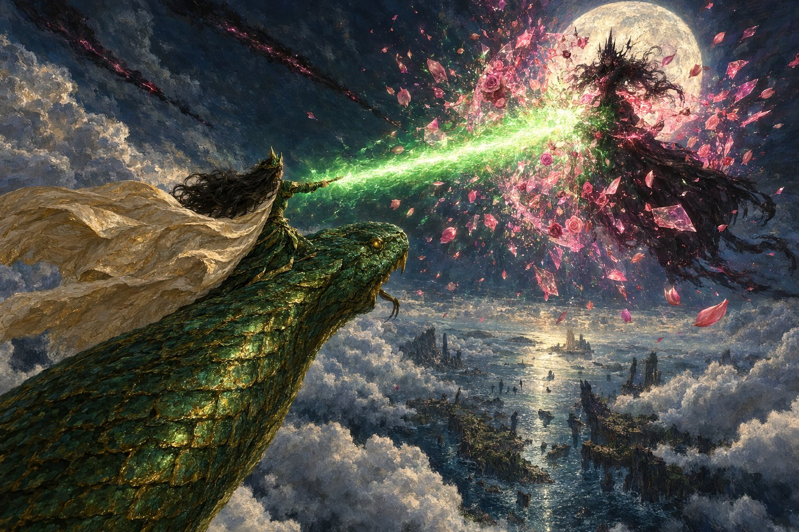
Hanji had time to look down at herself, at her bare black shape, in total shock.
Then Neya's great serpent opened its jaws and swallowed her whole.
For a moment, everything was quiet.
Then the serpent bulged. Light leaked out between its scales. Black light.
"If I go," Hanji's voice screamed from inside it, "you all go with me!"
The great serpent exploded.
It didn't die. It was never alive to begin with, only Neya's power in serpent form. It burst apart into green light. But in the middle of the green light was Hanji, swelling bigger and bigger, glowing black and white, about to explode and take the whole of the centre of the realm with her.
Something gold flew up past Neya.
Jeje. She'd leapt straight off the back of a dragon with her green staff raised.
"Not today!" she shouted, and slammed the staff down.
Gold lines shot out of it, the same lines as the maze. Walls, corners, turns and dead ends, folding in on themselves around Hanji, tighter and tighter, until she was trapped inside a maze so small and so twisting that she couldn't find her way out. The lines snapped together into a cube of gold and green, no bigger than a box of tea.
The black light inside it flickered, and went still.
The cube dropped out of the sky, and Neya caught it.
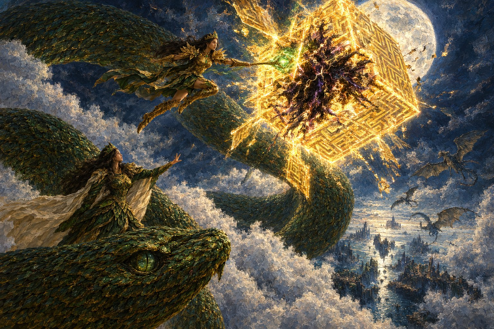
Slowly, everyone came back down to what was left of the island.
The armies came up out of Jeje's maze. Kaylee's trees still held the broken land together. Jasmyn's dragons settled on the shore. The red soldiers who were left just sat on the ground, not even trying to fight any more. Talitha's healers started walking among the wounded. KZ and Maureen held hands.
Neya sat on a rock at the edge of the water, holding the little gold cube in her lap.
Jeje sat down next to her. "Boring?" she asked.
"So boring," Neya said, and they both started laughing, and couldn't stop.
The clouds pulled apart, and moonlight fell over all of them.
It was over.
All that was left was the Grand Map.
Chapter 25 — Two Rings
The day after the battle, Naya sailed into Opita.
The candy towers were standing again. They weren't finished, but they were standing, and there were flags on them, and people in the streets. Opi met him at the dock and hugged him, and then hit him on the arm for looking so beaten up, and then hugged him again.
The last few days had been a blur. With Zav and Laura, he had taken back the Broccolingdom. Zav's people came home on Laura's lanterns, and Laura actually waved at the crowd, a little. Then KZ Roselynd, where Aya was waiting with her elephants and a hundred questions. And now Opita. In every kingdom, he had stood at the shore and charted the land and the water, and in every kingdom, the map had gone into the gold ring.
It was done. The new ring was full.
Almost everyone was home now. The queens were back in their kingdoms, rebuilding. The ducks were flying. The realm was starting to breathe.
But Naya had learned one more thing.
On KZ Roselynd's northern shore, he and Aya had caught the last of the red ship captains, the ones who'd stayed behind when the fleets sailed south. They had been terrified. Their emperor's ring had cracked, and they said the sea had gone wild underneath them the moment it happened. They'd been sailing in circles ever since.
And when he asked them where they had come from, they told him.
Bayasura.
A land far to the north, past the edge of every map. A land full of people who worshipped devils and demons. That was where Raian had gone, all those years ago. That was where he'd found his army.
And if there was one Raian there, there could be others.
Naya stood at the end of Opi's dock and looked north for a long time.
Somebody needed to go there. Somebody needed to find out what was waiting in Bayasura before it came looking for the realm again. And he was the only person in the realm who could sail anywhere without a map.
But going meant leaving. For a long time. Maybe a very long time.
"Opi," he said. "Can I borrow a ship?"
Neya knew the moment the sea changed.
She was standing on the balcony of her sea palace at the Hangkas, the gold cube on the table beside her, when the wild currents in the bay went smooth. Just like that. The waves lay down, the winds turned the right way round, and far out in the harbour, a fishing boat that hadn't moved in weeks raised its sail and set off.
The map was back.
Which meant he was nearly here.
She was waiting at the end of the dock when Opi's little candy-pink ship sailed in. Naya jumped off before it had even stopped.
They didn't say anything at first. She just held on to him, and he held on to her, for a very long time.
Then they sat on the end of the dock with their feet over the water and told each other everything. She told him about the ambush at sea, and the maze, and Hanji. He told her about his clouds, and Tama, and falling out of the sky. She laughed so hard at Bina's letter that she nearly fell in the water. He went quiet when she told him about Raian.
"He was my friend," he said after a while. "A long time ago."
"I know," she said.
Then he told her about Bayasura.
She listened all the way to the end. She looked out at the sea for a long moment. Then she said, "You have to go."
He looked at her. "Neya…"
"You have to go," she said again, more gently. "Somebody has to, and you're the only one who can. And you want to. I can see it on your face. You've been looking north since you sat down." She bumped his shoulder with hers. "Besides. Pirates aren't supposed to stay in one place anyway."
He laughed, but his eyes were wet.
"Follow your heart," she said. "That's what you always do. It's one of the things I love about you."
He took a long breath. "Not yet, though," he said. "I'm going home first. My crews have been at sea since the war started, and half my islands still don't know if I'm alive. And look at this place." He nodded at the harbour, at the burnt sails and the broken docks. "The realm's barely standing. I'm not leaving it like this."
"So when?"
"Two months," he said. "I'll help everyone rebuild. Carry the timber, chase off the last of the red ships, whatever needs doing. Then I'll go."
Two months. It sounded like a long time. They both knew it wasn't.
She picked up the gold cube and put it in his hands. "Then take her with you when you go. Keep her as far away from this realm as you can."
"I will."
Then he reached into his coat and took out two rings.
The silver Ring of the Sea, old and worn and empty. And the gold Ring of the Moon, shining and new, with the little curve along its side like a sleeping snake.
He put them both in her hand and closed her fingers around them.
"The map's in the gold one," he said. "All of it. Every kingdom. The silver one's empty, but I want you to have it anyway." He held on to her hand. "The realm's yours, Neya. It always was. I trust you to keep it safe."
She looked down at the two rings for a long time. Then she put them on, both of them, side by side.
They stayed on the dock until the sun went down.
Neither of them said much. There would be time for that, they told themselves. Two whole months of it. But they both kept counting anyway, quietly, the way you count the last pages of a book you don't want to finish.
She leaned her head on his shoulder. He rested his cheek on her hair. The sky went orange, then pink, then gold, and her serpents rose out of the water and coiled quietly around the dock beside them, the way they always did when she was sad.
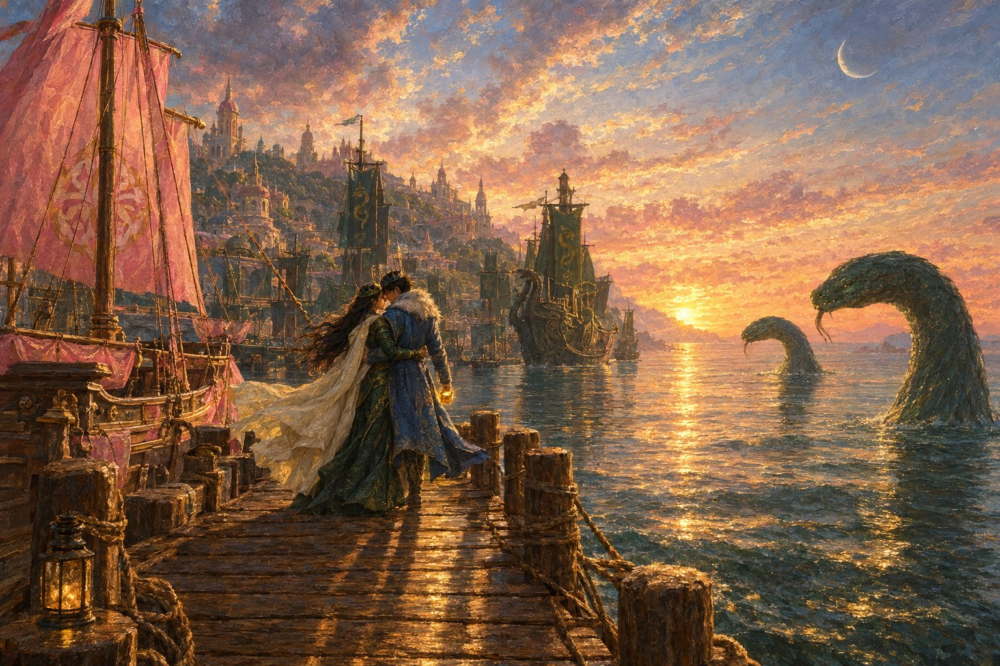
"I'm not gone yet," he said softly.
"I know," she said. "I'm just practising."
He laughed, and she laughed, and then neither of them was laughing, and they just held on.
In the morning, he sailed west for home. Not far. Not yet. He'd be back in a few days with a ship full of timber and a crew full of complaints, and the two of them would fix the realm together, one kingdom at a time, for as long as they had.
Neya watched his sails until they slipped over the edge of the sea. Then she looked down at her hand.
Silver and gold. The sea and the moon. They caught the morning light and shone over the Hangkas, over the harbour and the serpent towers and the boats setting out again on a calm, kind sea.